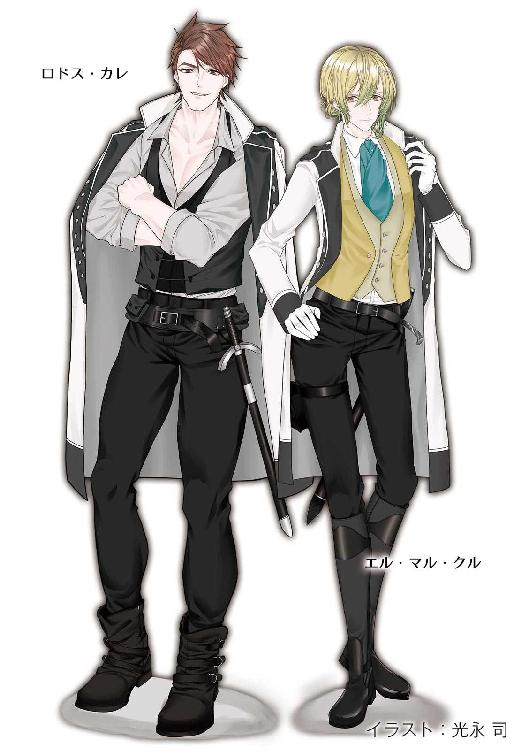

| 月戈伝 2巻 月KA伝シリーズ | |
| 御木 宏美 | |
| クリーク・アンド・リバー社 (2018) | |

月戈伝 ２巻
～月KA伝シリーズ３～
御木 宏美
本作品の全部または一部を無断で複製、転載、配信、送信したり、ホームページ上に転載したりすることを禁止します。また、本作品の内容を無断で改変、改ざん等を行うことも禁止します。
本作品購入時にご承諾いただいた規約により、有償・無償にかかわらず本作品を第三者に譲渡することはできません。
本作品を示すサムネイルなどのイメージ画像は、再ダウンロード時に予告なく変更される場合があります。
本作品は縦書きでレイアウトされています。
また、ご覧になるリーディングシステムにより、表示の差が認められることがあります。
月戈伝
三章
１
十数人のみすぼらしいなりをした大人と子供が、まだ雪深い山岳地をとぼとぼと歩いていた。食いつめ、バイロンから逃げ出そうとしている一組の家族だった。
集団を率いているのは老いた男。長年、山の案内を生業にしてきた。
バイロンとレイクトラの間には、頂上に万年雪を頂いたランドック山脈が横たわる。両国を行き来するには、いくつもの峠を越え、谷を渡らねばならない。
バイロンとレイクトラを繋ぐ街道は三本。どれを通っても、現実の国境といえる税関のある町からレイクトラ側のそれまで、大人の足で最短五日。その間は、村はおろか人家一つなく、必然的に夜は野営となる。
しかし行程の大半は薪となる木も生えていない高地で、水を求めるのも容易ではない。また山岳地の天気は変わりやすく、濃い霧が発生したり、道が川となるほどの豪雨に見舞われることもあり、案内人は欠かせない。
彼らは、どこに湧き水があるか、雨を避ける岩場があるか、濡れた身体を温める薪が手に入る場所があるか、風が吹きつける尾根で濃霧のために動けず日暮れを迎えてしまったらどうすればいいか、あらゆることを熟知していた。
老人も、やはり案内人だった父親について、十二で山に登った。以来、五十年。
彼が仕事場にしていたのは、探検者の名をとってフランコの道と名がついた、東の街道だった。バイロンの都とレイクトラの都を結ぶ最短ルートだが、途中、荷車が通行できない急な岩場がいくつもあり、人や動物しか行き来できない。
荷を運ぶ動物たちは、大の男二人分の重さを背負って山道を進む。老人はそんな動物を何頭も連れた隊商や旅人を案内してきた。その仕事で五人の子供を育て上げ、三人の息子も案内人になった。そして息子らの成長を見届けると、さすがの山男も寄る年並みには勝てずに数年前に引退し、それからは長年連れ添った女房と、まだ嫁いでいない末の娘と、三組の息子夫婦と、その子供たちに囲まれて、国境近くの寒村で、貧しいが穏やかに暮らしていた。この冬までは。
集団の先頭で、深く降り積もった雪が春の陽射しで融けはじめ水っぽくなった足元を一歩一歩確かめながら歩く老人の表情は険しい。
女房はもうこの世にはいない。八人いた孫のうち、二人も。三人はふた月前、風邪をこじらせ、相次いで死んだ。その悲しみが癒えぬまに息子たちも全員、兵隊にとられた。
すべては二年続きの冷夏のせいだ──。
重苦しい気持ちで進んでいた老人の耳に子供の泣き声が聞こえた。
「足が痛いよう......」
歩みを止め、老人は振り返った。五歳になる男の孫だった。子供にはきつい道のりで、頬は真っ赤。その火照った顔を歪め、大粒の涙をこぼしている。
その子の母親、兵隊にとられた息子の嫁がそばに行って肩を抱き寄せ、擦り切れた外套の上から腕をさすりながらに痛ましげに励ます。
「我慢をおし。痛いのはまだ凍傷になっていない証拠よ。ありがたいことなの」
老人の顔が歪んだ。
脂を塗りこんだ長靴も、水っぽい雪の中を長時間歩くと水が染みてくる。大人でもその痛みは辛いのだ。幼い子供には耐え難かろう。
おぶってやりたいが、老いた身体には五歳の子を背負って山道を登る力は、もうない。それに老人の背には、食料と一歳になる別の孫がいた。この赤ん坊だけで精一杯だ。
集団の中に大人の男は老人一人。あとは女と十四を頭にした子供ばかり。息子たちの嫁と、老人の二人の娘と、その子供たちだ。上の娘の夫も兵隊にとられた。
どの顔も疲れきっている。無理もない。まだ雪が残る季節に山越えなど、大の男でもよほどの事情がなければやりはしない。危険だからだ。
山の夜はまだ冷え込む。日中、融けた雪は明けがた凍りつく。急な斜面で足を滑らせたら一巻の終わり。そのほか、雪崩、氷河にぱっくりと口を開けたクレパス。春の山には旅人を黄泉の国に引きずり込もうと、あらゆる危険が待ち構えている。
山で生きてきた老人は誰よりその恐ろしさがわかっていた。女と幼い子供を連れて雪山を越えようなど、暴挙以外のなにものでもない。それでも老人をその無謀な行為に駆り立てたもの、それは国にいても遅かれ早かれ飢え死するしかないというバイロンの状況だった。
二年続きの冷夏で、わずかばかりあった穀物の配給は途絶えた。もはや国の倉庫にも麦はおろか、雑穀すら残ってない。国は隣国のレイクトラへの侵攻を計画し、健康な男はあらかた兵隊にとられた。
もともとバイロンに耕地は少ない。ランドック山脈の北側には、うっそうと葉を茂らせた大木が並ぶ深い森が続いている。とても大きな森で、人が北に向かって夏中歩き続けても、森は切れることがない。
シャーは森を伐採してはならないとおっしゃられた。森は空気を作る。人と同じように森の木も呼吸をしている。木は人が吐き出した悪い空気を吸って、綺麗な空気を吐き出す。だから森を伐ってしまうと、人は息ができなくなって死んでしまう。森は人が生きていくためにシャーがお与えくださった大切なものだ。
だからバイロンの民は必要以上に木を伐らない。食べるために畑は作るが、それは本当に必要最小限だけだ。それ以上は、決して伐ってはならない。牛や豚などの家畜は、森の中に放して、草や木の実を食べさせ、育てる。レイクトラのように、森を切り開いて牧草地を作り、必要以上に牛や豚を育てはしない。
バイロンの民はシャーの教えを忠実に守って、つましくつましく暮らしてきた。それなのに飢える。なぜだ。
山の麓の村に嫁いだ娘は、そのわずかな畑でさえ、今年はまったく耕されていないと言った。耕しても種籾がない。男手は兵隊にとられた。
優しい夫は出征の朝、子供を連れて実家に戻れと言った。自分は生きて戻れる保証はないから。一家の主が死んだら、女と子供だけでは暮らしていけない。隣国へ逃れるのも困難になるだろう。しかし山越えの案内人だった父親のもとなら、生き延びられる可能性はまだわずかだがある。
それを聞いた時、老人は決心した。
国を捨てて、レイクトラに逃げよう。
待っていても攻め入った軍隊が食料を持って帰ってくるという保証は、どこにもない。万が一にも全滅したら。事実、十九年前、バイロンはレイクトラに負けたのだ。
それに戦が始まれば、両国の間を行き来する隊商や巡礼者は皆無になる。案内で生計を立てている者にとって、現金収入の道が途絶えれば、どの道、食料はまったく手に入らない。
戦場や難民の群れの中を若い女を連れて歩くことは、狼の群れに羊を放り込むようなものだ。兵士やすさんだ男たちは女を見れば必ず襲う。逃げるなら戦や避難が始まっていない今しかない。雪の残る山を越えようという暴挙に出る者は少ないし、重く大きな兵器を輸送しなければならない軍隊は、三本のうち、荷車が通れる街道しか使えない。幸い、自分は徒歩でしか通行できない街道に詳しい。それを使えば、なんとかなる。
娘と息子らの嫁、孫たちを連れて、夜中にこっそり家を出た。
自分たちだけ逃げるのか。友や国に残る民の呻きが聞こえるようだった。
裏切り者と言われようと、身勝手と罵られようと、かまわない。家族を生きながらえさせるには、それしかないのだ。
「......行くぞ」
孫の訴えでしばし足が止まっていた家族をむっつりと促し、老人は再び進み始めた。
山向こうのレイクトラが豊かな国だというのは、若いころから隊商や旅人に何度も聞いた。レイクトラでは冬を越すに充分な食料があり、街道端の小さな農家でさえ、余ったチーズや玉子や野菜を旅人に売って現金を手にしていると。
豊かなのは、森をすべて伐採し、農地や牧草地を作ったからだ。レイクトラにも森はある。けれどそれは木材や薪や木の実を取るために作った森だ。シャーがお与えくださった自然の森ではない。
なぜ、シャーは教えを守り、つましく生きてきたバイロンの民にばかり、試練をお授けになるのか。聖典に背く気は毛頭ない。しかし、シャーの御心をそのまま受け入れるのは、時にたいそう難しい。
山と山の間の狭い街道で、食料が入った袋と赤ん坊を背負って、ぬかるんだ雪の中を、一歩一歩、峠を目指して上っていく老人の顔は悲しみに歪んでいた。
「ここでさ」
毛糸の帽子に手袋、底に長い板をつけた長靴といういでたちの案内人に先導され、ダカーンと一小隊十二人の傭兵が小型の大砲を乗せた犬ぞりを率いて峠に着いた。杖をつきながら雪深い山道を登って来た一行は帽子を取って額の汗をぬぐう。
レイクトラとバイロンを結ぶ街道の一つ、通称フランコの道。そのほぼ中間に位置する峠の頂である。切り立った高峰が周囲を囲む。
「すぐに準備にかかれ」
後方の兵士たちに命じて、ダカーンはあたりを見回した。
見渡すかぎり、白銀の世界が広がっている。よく晴れた日で、陽光が降り積もった雪にぎらぎらと反射して眩しい。帽子のつばの下でダカーンは目を細めた。光のせいで雪目になって、なにを見ても黒い斑点がついている。
突然、目の前に右手のなだらかな斜面からなにかが飛び出してきた。
「エスキル！」
ダカーンは驚いて思わず声をあげた。
つばのついた帽子を目深にかぶり毛糸のマフラーで鼻の上まで覆った若者は紫水晶の瞳をちらりと上げ、抑揚のない声で答えた。
「遅かったな」
「ふん」ダカーンは鼻を鳴らした。「鉄の塊を引っ張っておるのだ」
エスキルがそちらへ眼差しを向ける。
横一列に黒い砲門が並んでいる。そりは五台。四台に一門ずつ大砲が乗っていて、残りの一台には干草が山と積んである。
そりと一緒にやって来た、いずれもダカーンに負けず劣らずの巨漢ぞろいの兵士たちは大砲を下ろすと、火薬を量って砲門の中へ入れた。布を巻きつけた長い棒で砲身の奥へ押し込み、上から干草を詰め込む。
「おまえのほうはどうだ？」
ダカーンが尋ねた。エスキルは街道のはるか先、その両側になだらかに迫る斜面を指差した。ダカーンは太い眉をひそめる。
「どこだ？」
エスキルは腰の小物入れからなにかを取り出し、差し出した。
アレグリナを迎えに異世界に渡った時に持ち帰った色眼鏡だった。透明の青い板が顔に沿うように湾曲していて、真ん中に鼻の切れ込みがある。
エスキルとダカーンでは子供と大人ほども対格差がある。おまけにエスキルは極端に顔が小さい。その色眼鏡は巨漢のダカーンには小さすぎたが、なんとか顔を収める。
青い板によって光が薄れて、しばらくは余計に目がちかちかした。だが、やがてわずかながらものの輪郭が見えるようになる。
針葉樹がまばらに生えた斜面に、豆粒のような人影がぽつんぽつんと見える。街道からはかなりの高さがあり、この峠よりもさらに高い。反対側の斜面にも同じように人影がある。
「準備はできている」
相変わらず抑揚の乏しい口調でエスキルが言う。
エスキルは自身と同じように小柄で目かたが軽く軽業師のように身の軽い傭兵で構成した二小隊を率いて一足先に来て、斜面に火薬を仕かけていた。このような雪深い地ではダカーンのような体重の重い巨漢より小柄で軽い人間のほうが軽快に動ける。
火薬の設置場所は片側の斜面に六ヵ所ずつ、両方で十二ヵ所。それぞれに二人ずつの兵士がついていて、合図を待っている。
「よし」
色眼鏡を返し、ダカーンは背後を振り返った。
「こっちも準備完了でさ」
大砲に火薬を仕込んでいた兵士の一人が告げた。砲身には口まで干草がぎっしり詰め込んである。頷き、ダカーンは傍らの兵士に命令した。
「火を熾せ」
兵士は雪の上に水を弾く油紙を広げ、その上に残っている干草を全部乗せた。四人の兵士が先端に油を染み込ませた布を巻きつけた鉄の長い棒を握ってやって来て、干草を囲む。
エスキルが懐から小型の拳銃を取り出し、空に向けて引き鉄を引いた。
パーン！
乾いた音が雪原に響き渡り、周囲の山に当たってこだまする。斜面で待機している兵たちに、火の準備をしろという合図だ。音に驚いた犬たちが一斉に吼える。
その間に後方では懐から銅の懐炉を取り出した兵士が干草の上に火種を置いた。
よく乾いた干草はたちまち炎をあげて燃え出し、鉄の棒を握った兵士たちがその炎で油を染み込ませた布に火をつける。
炎が踊る鉄の棒を持って四人は大砲の後ろへと駆け戻った。
ダカーンとエスキルも大砲の後方へ移動した。案内人と手の空いた兵士も犬たちを連れて安全な場所まで後退する。
エスキルがちらりとダカーンを見上げて、拳銃を空に向けた。指揮権を年長者に委ね、発射の合図を待つ。
ダカーンは並んだ四門の大砲の先に目を向けた。
白銀の世界。青空の下、険峻な高峰と白く輝く雪渓が描き出す風景は冒しがたい気品と迫力があった。生き物の気配はない。そこは人間の手が及ばない領域。目の前に広がる景色は、まさに神が創りたもうた世界だ。その圧倒的迫力の中にたたずむと、自分がひどくちっぽけなものに感じる。
眉間にしわを刻み、ダカーンはうっそりと一人ごちた。
「オルターしか思いつかんな」
この雄大で神々しい雪渓を、人の手で崩す方法など。
命じたのはアレグリナとギルネだ。
レイクトラがバイロンとの戦に勝利しても、食料が尽きれば難民が押し寄せてくる。レイクトラは人道的立場から受け入れざるを得ない。たとえ国境の検問を強化しても、難民は夜陰に紛れていくらでも入ってくる。
数百から、最悪数千人程度の難民は引き受けるが、けっして万を越す数を入れてはならない。それがアレグリナとギルネの考えだった。多数の難民を抱えれば、物価が高騰し、民の暮らしは困窮。治安も乱れ、衛生面も悪化する。
レイクトラとバイロンを結ぶ街道は三本。このうち荷車が通れる主街道では戦が行われるので、難民は徒歩か動物しか通れない残りの二街道をやって来る。その街道を冬まで封鎖することができれば、食料が尽きたバイロンの民は自国内で餓死するか、隣国のソロイ、シャーゴへ流れる。結果として、レイクトラの治安と国庫は保たれる。
問題はバイロンにある十二宮とすべての月族の国家が批准している大条約だった。なんびとたりとも十二宮への聖なる巡礼を妨げてはならない、この一文のために街道は封鎖することができない。されど雪崩によって自然に封鎖されてしまったらどうか？
各国は街道の整備と保全に毎年多額の金銭と労力を拠出している。雪崩が起きて通行できなくなった街道の復旧作業はレイクトラとバイロンの責務だが、戦で手が回らなかったとしたら？ どのみちバイロンには整備する国力などありはしないのだ。
街道の両側の斜面の木がまばらなのは、十一使徒家の命を受けて初雪のころに傭兵たちがあらかた伐り倒したからだった。それが深く積もった雪の下に横たわっている。大規模な雪崩が発生すれば、雪と一緒に街道まで転がり落ちていく。堆積した雪は夏が来てもなかなか消えず、大木が積み重なった雪原の上を越えようとする者は、積もった雪のせいで木と木の間にぽっかりできた雪洞に気づかず深く落ち込み、身動きがとれなくなるだろう。
ダカーンは目を閉じ、シャーに祈った。
その罪は我に──。
あのかたは国を思い、民を思って、非道を行うのだ。それが罪なら、その処罰は自分が受ける。
決意を秘め、ダカーンは屹然と瞼をあげた。
「撃て！」
エスキルが引き金を引いた。
雪深い斜面では二人ずつ十二ヵ所に散らばった兵士たちが二度目の合図を待っていた。
数時間前にやって来た彼らは斜面を上り、高地に生えた大木の根元にそれぞれ火薬を詰めた樽を埋めた。樽には油を染み込ませた長い紐がついていて、離れた位置で待機する十二組の兵士たちのもとまでのびている。雪で湿らないように紐の下には油紙が敷いてあった。樽のそばの根元には紐と一緒に少量の火薬が細い帯をつくっている。
一回目の合図で、兵士たちは懐炉に入れて持ってきた火種から蝋燭に火をつけた。
息をつめて次の合図を待つ。
しばらくして、雪渓に乾いた発砲音が轟いた。
兵士たちは紐の端に蝋燭の炎を近づけた。
油が染み込んだ紐はたちまち燃え、蛇が這うように十二本の炎が雪原を走っていく。
大木の根元でパパパパッと火花が散った。
次の瞬間。
爆発が起こった。
峠の頂では、鉄の棒を手にした兵士たちが、大砲からできるだけ身を離し、炎を上げている先端を火門につけた。
蝋燭の火のような小さな炎が火門からちらちらと燃え上がった。
案内人が耳を毛糸の手袋をした両手でぎゅっと塞ぐ。
ダカーンとエスキルは斜面に目を向けた。
突然、斜面の一ヵ所で爆発が起こった。
轟音とともに雪煙が舞い上がる。
対岸の斜面でも爆発が起きた。
続いて、左右の斜面でほぼ同時に。
間髪を入れず十二個の樽が次々と爆発し、斜面に雪煙が舞い上がる。
それが終わらぬ間に──ドーン！
大砲が後ろに飛び退り、空一面に干草が飛び散った。
四門の砲身が立て続けに、鉄の球の代わりに干草を打ち出した。
ドーン！ ドーン！ ドーン！
空気がびりびりと震える。
Ｖ字型の谷の中で大砲の音と爆発音が重なり、それが斜面にあたって跳ね返り、まるで寄せては返す波のように幾重にも重なり合って、広くはない谷を轟音で埋め尽くす。
雪の斜面が崩れた。
春の陽射しに積もった雪は融けかけて重くなっていた。それが左右とも一気に崩れた。
ゴオオオオッ──。
雪はその下に眠っていた倒木を巻き込んで街道へ向かって雪崩れ落ちていく。
突き上げるような震動が来た。凄まじい轟音が鼓膜を震わす。
「隊長殿っ、あそこに人が......！」
突然、兵士の一人が街道を指差し叫んだ。
「なにっ!?」
ダカーンは指差す方向に目を向けた。そのとき右の斜面を駆け下りた雪崩が谷底の街道に到着した。数秒遅れて左からも膨大な雪の津波が押し寄せる。
二つの雪崩が谷底の街道でぶつかり、重なり合う。
もうもうたる雪煙があたりを埋め尽くした。
「見えたか!?」
ダカーンはエスキルに尋ねた。
「ああ......」青い色眼鏡をかけた若者は低い声で答えた。「十数人いた。何人かは子供だった」
「巻き込まれたか!?」
「わからない」
珍しく答える口調は硬い。
ダカーンは谷へ視線を戻した。
斜面は両側とも火薬を仕掛けた位置から下の雪が、幅数十メートル、高さは六十メートルあまりにわたって崩れ落ち、倒木や岩を巻き込んだ膨大な量の雪が、二十メートルの厚さで街道の上に堆積していた。
重苦しい沈黙がその場を支配した。
案内人と傭兵たちがため息をつきながら首を横に振る。
ダカーンは目を閉じた。
２
薔薇の季節になった。
聖宮の庭園でも色とりどりの薔薇が咲き誇っていた。
上空から見下ろすと、白鳥が翼を後方に伸ばして飛ぶ姿に見える聖宮には、大小合わせて七つの庭園がある。一番大きなものは左右の翼に位置する聖シェリス宮と聖マルシー宮にはさまれた大庭園である。聖宮は全体が城壁で囲まれているが、大庭園はそれを感じない面積がある。
大庭園には聖宮に参内を許された者ならば誰でも入ることができる。芝生の上に数々の生垣と花壇を配し、茂みの影にはいくつもの隠れ家風の東屋が建ち、夏には噴水の水が涼しげな音をたてて煌めく。そこは貴婦人たちのお気に入りの散歩道でもある。
その大庭園で、アレグリナの希望による茶会が、同年齢の少女三十人ばかりを招いて開かれていた。招待されたのは閣僚や次官など、現政権の柄臣の孫や娘や妹で、十一使徒家のファチャも今日は女官ではなく上級貴族の令嬢として招待客の中にある。
会場は森の広場と呼ばれている一角で、木立の中にテラコッタを敷き詰めた小さな広場が開け、純白の東屋が建っている。その名が示すとおり見所といえば、生い茂る木々の緑と赤茶色のタイルと白い東屋の色の対比ぐらいで、普段はさして見栄えのしない場所だが、この日はアレグリナの希望に合わせて宮務官たちが苦心を重ねた結果、素朴な広場は目を見張るほど可憐なガーデンパーティー会場へと姿を変えていた。
しつらえはもとより、招かれた少女たちをまず驚かせたのが、会場の入口で一人一人に渡された薔薇の花珠。腕にかけられるように絹のリボンがついていて、真珠のように真ん円。色は白、ピンク、赤、オレンジ、紫など、何種類もあって、招待客のドレスの色に合わせて配られる。
そのすてきな花珠は東屋の柱をはじめ、木陰に並べられたベンチ、テラコッタの石畳など、会場のいたるところにも飾りつけられていた。そして東屋の前にある、白いクロスがかかったテーブルの上には、女の子好みの可愛いお菓子がこれも見栄えよく並べられていて、その周りも花で埋めつくされている。
給仕の召使いは見目良い若者だけを選び、女の子が目にしたくない、太った男や脂ぎった男、頭の禿げた風采のあがらないおじさん連中は、たとえ上級宮務官といえども立ち入り厳禁が命じられ、可憐な宴に優雅な調べをそえる宮廷楽師の小楽隊も、容姿を基準に選抜されるというこだわりである。
「なんてすてきなお茶会でしょう！」
「楽しんでいってね」
「ありがとうございます、アレグリナ様！」
会場には最新流行のドレスに身を包んだ少女たちの、眩しい陽射しに勝るとも劣らない華やかで明るい笑い声が満ちている。
「シナーン！」
アレグリナは女の子ばかりのお茶会に、唯一の例外で招待された少年に駆け寄った。
「どうしたの、そんな隅っこで。向こうに行きましょ。おいしいお菓子があるわ」
腕を取って導く。シナーンは苦笑を浮かべた。
「よろしいのですか、僕など」
「当たり前よ。戦争に行ってなかったらエスキルも参加させたんだけど」
シナーンは軽く笑った。
「たとえご命令でも絶対来ませんよ。騒々しいのが大嫌いですから」
「でしょうね。本当はエスキルも神王騎士団に入る予定だったのよ。私の警護官がリプシマ一人じゃ大変だから」
アレグリナは背後を振り返った。その美人の女騎士は少女たちに取り囲まれて動けないでいた。思わず微笑をこぼし、シナーンへ顔を戻す。
「でもエスキルったら、混乱のどさくさに紛れて、みんなが気づいたときにはダカーンについてさっさと月の谷へ帰っちゃってて」
「おそらく最初から狙っていましたね」
「ええ、きっと──ギルネにもこのパーティーに出席してって頼んだの。もちろんこっちは嫌がらせ目的で言ってやったんだけど。案の定、仕事があるって逃げていったわ」
シナーンは苦笑を深めた。
「そんなに悪い人ではありませんよ」
「わかってるわ。でも──」
「アレグリナ様」
シナーンは微笑みながらたしなめる。
「......はぁーい......」
アレグリナはしぶしぶ返事をした。それでいい、とシナーンは頷く。アレグリナはその少女のような面差しを見つめた。
「聖下？」
気配を察してシナーンが少し首を傾げる。
「ううん──座ろ」
そこにあったベンチに導き、二人は並んで腰を下ろした。
そのベンチにも優美な曲線を描く左右の肘掛けに薔薇の花珠が飾りつけてある。
「いい香りですね」
シナーンが微笑みながら言った。アレグリナは腕にかけていた花珠をシナーンの鼻先に差し出した。
「とてもいい香りがします」
「お母様の聖廟にもさっき同じものを届けたの。薔薇が好きだったってシグリが言ってたから」
「きっとお喜びになられていらっしゃいますよ」
「うん......」
頷いて、アレグリナは膝の上に戻した花珠を見つめた。
「アレグリナ様？」
「......不思議ね。地球の薔薇には青い遺伝子はないはず」
深い海のような鮮やかな青い薔薇。
「いでんし？」
「ええと、動物や植物の、色や形を決める指示書？」答えてアレグリナは声を潜めた。「私とシナーンの目の色が同じなのもアシュレの遺伝子よ。人間は誰でも父親の遺伝子と母親の遺伝子、二つの指示書を持ってるの。髪とか目とかそれぞれの部位ごとに、父親と母親、どちらの指示書が使われるかは兄弟でも違うんだけど。でも、髪も目も鼻も手足も、すべて父親か母親、どちらかの遺伝子で作られたものよ。シャーが作るのではないわ。人間の誕生にシャーは関係してない」
シナーンは軽くため息をついた。
「そこまでわかってしまったら、あちらの世界で神を尊ばないかたがたが増えるのも道理ですね」
「そうね。こちらでは神官たちの耳に入ったら異端視されて処刑だわ。だから内緒ね」
「わかりました。内緒がいっぱいですね」
「本当」
二人はくすくすと笑い合った。
ふと、シナーンが笑うのをやめて、見えない目を巡らせた。
「......エル・マル？」
視線を追い、アレグリナは感心した。
「よくわかったわね」
音楽と少女たちのおしゃべりや笑い声で足音など聞こえない。しかも広場に入って来たばかりで、二人からはまだかなり距離がある。
シナーンは微苦笑を浮かべた。
「なんとなく、気配がしたので」
少し甘めの端整なマスクに少女たちがざわめいた。
「どなたかしら？」
上級貴族であることはその身なりから誰もがわかる。
「知らないの？ クル家のエル・マル様ですわ」
「では十一使徒家のかたね！」
「とってもいい香り！ どんなオードトワレを使っていらっしゃるのかしら」
「私、知ってるわ。お誕生日もお父様に訊ねてもらったの」
「ずるーい！ あたくしにも教えて！」
少女特有の黄色い声がそこここであがる。エル・マルは苦笑を浮かべながらまっすぐにアレグリナとシナーンのもとにやって来て、テラコッタの石畳の上に跪いた。
アレグリナはくすくすと笑った。
「人気者」
エル・マルは苦笑を深めた。
「お楽しみのところ、突然、申し訳ございません」
「いいわよ。なあに？」
跪いたままエル・マルはちらと周囲に視線を走らせた。そして青年は近くに誰もいないことを確認すると、声を潜めた。
「イスハク・パシャが内密での面会を求めております」
「え？」
アレグリナを見上げ、エル・マルは表情の端にほのかに苦笑を刻んだ。
「聖下にお引き合わせしたい人物を伴ってまいっているよし」
アレグリナは目を見開いた。
ある人物が脳裏に浮かぶ。
シナーンが気遣わしげに表情を曇らせた。
「エル・マル......」
エル・マルはなにも答えずまっすぐアレグリナを見つめている。
アレグリナは急いで周囲を見回した。
リプシマは相変わらず少女たちに取り囲まれていて、ガラジェはファチャと東屋の中で話をしていた。監視がいつもより甘い。招待客は十代の少女ばかり、それも柄臣の身内とあって、気が緩んでいるのだろう。
「よろしければあちらに」
エル・マルは人気のない茂みを示す。
アレグリナはドレスの胸元を握り締めた。
エル・マルに連れられてこっそり会場を抜け出したアレグリナが案内されたのは、深い木立の陰にひっそりとたたずむ小さな東屋だった。その存在を知らなければ、そこに建物があることすら気づかず通り過ぎてしまうであろう。
密会にはうってつけの場所だった。
六角形の小さな建物は床も柱も屋根も白い石でできていて、壁は大人の腰の高さほど。その壁に沿って内側にベンチが設けてある。
アレグリナを迎えて、イスハク・パシャがベンチから腰を上げ、石床に跪いた。
「突然の無礼を、どうぞお許しを」
齢は六十代半ば。温和な顔立ちで、身体はかなりの恰幅。頭のてっぺんまで禿げ上がった髪は金より白が勝っている。
「顔をお上げなさい。どうぞ椅子へ」
アレグリナは威厳に満ちた声で言葉をかける。
パシャは一礼し、もといた場所に戻った。
傍らに二十歳ぐらいの若者が座っていた。
彼ではない──。
なかば予想していたことだが、わかったとたん、アレグリナは落胆した。
やはり彼はもうあちらの世界に戻ってしまったのか──。
若者は黒い髪で、パシャと同じように裕福な市民層のなりをしていた。座っているのではっきりした背丈はわからないが、見た感じではエル・マルと同じくらい。若者らしい甘さはあるが、どちらかといえば男らしい精悍な顔立ち。印象的なのはきりっとした眉と、まっすぐな視線。瞳はアレグリナと同じ、グリーンだった。
神王を前にして跪かない若者に、一体何者とアレグリナは少々不快に思う。挑みかかってくるような視線も気に入らない。
「こちらのかたが、ぜひアレグリナ聖下にお会いしてじかにお話したいと申されておられましてな」続けてパシャが紹介する。「バイロンの第六王子アスラン・ジャルギ殿下です」
アレグリナは驚いた。
傭兵の口入れを生業とする豪商はなにやら薄く笑う。
「バイロンの大使殿を通して、再三、ご面会を申し入れておられましたが、枢密院のかたがたにことごとく拒絶され、出入りの御用商人も処罰を怖れて引き受ける者がおらず......。親しい毛皮商人がわたくしに話を持ちかけてきたしだい」
アレグリナは振り返り、東屋の外で跪き控えているエル・マルに目を向けた。どうやらすべて把握しているらしく、エル・マルは無言で頷く。
「......アスラン・ジャルギです」
若者は低い声で名乗った。押さえ込んではいるが、表情の端に怒りが潜んでいる。
アレグリナはつんと顎を上げ、冷たい声で答えた。
「話とは？」
豪商が微笑いながら若者をたしなめた。
「そのように恐い顔をなさっていては、交渉ごとはできません。特に女人は我ら男より感情が細やか。女人相手の交渉はもっと穏やかに行わねば」
「だが、我が国では飢え死にする民がいるというのに、あの菓子や花や音楽はなんとしたことか！」
「それがなにか？」
アレグリナが重ねて居丈高に答えた。エル・マルが苦笑を浮かべる。
アスランは唇を噛み締めた。目を閉じ、大きく息をつく。
若者は石床に膝をつき、頭を下げた。
「アレグリナ聖下におかれましては、ご即位に際し、民を思っての御心で、内乱を回避すべく、御自ら謀反者を討たれたとお聞きしました。その慈悲深き神王殿にお願い申しあげます。どうか我が国に食料の援助を」
「あいにく出せるものはないわ」
アレグリナは冷ややかに答えた。
アスランは跪いたまま目を上げた。
「ふた月、お国の様子を拝見させていただきました。貴国には充分な食料がある」
「聞こえなかった？ ほどこす物はないと言ったのよ」
視線が合う。
澄んだ翠色の双眸が、絹と宝石と瑞々しい花で身を飾った美しい少女をひたと見据える。
「このままでは我が国の民は冬になれば飢え死にします。ソロイにお売りになっている穀物の半分でもバイロンに回していただけぬか。あちらの国は鉱山によって充分な財力がある。不足分は他国から買えましょう」
「バイロンが正当な対価を支払ってくれるのであれば、そうしてもいいわ。でも、あなたの国には買えるお金もないのでしょう。それにレイクトラからの輸出が止まれば、トスカナ全体の穀物価格が上昇するわ。それはほかの品物の価格にも影響を及ぼして、やがては国全体が物価高になるのよ。あなた、うちの民に苦労しろって言うの？」
「戦になれば大勢の民が傷つき、命を落とす」
「それが？」
「それが......？」若者は驚いた顔をした。「畏れながら、アレグリナ殿は庶民の養育院でお育ちになられたとお聞きした。私も母は農民の出で、私を産んでまもなく亡くなったため、修道院で育ちました。家族に見捨てられた病人や年寄り、ひとかけらのパンを求めてやってくる物乞いなど、弱き立場の人々の悲しみや苦しみをたくさん見てきた。アレグリナ殿もその苦しみがおわかりになるはず」
「ええ、たしかに私は庶民の中で育ったわ。でも今はこのレイクトラの神王よ。私にはこの国の民がまともに暮らしていけるよう導く責務がある。でも他国のことは知らないわ。飢え死にしようが、疫病で全滅しようが、私には関係ない」
アスランの顔に怒気がさした。
「あなたは......！」
険しい眼差しを平然と見返し、アレグリナは冷淡に続ける。
「それに援助物資を受け取ったあと、あなたの国が攻め込んでこないという保障がどこにあるの？ あなたの兄上のサーマル殿は生粋の軍国主義者という話よ」
「それは私が命に代えましても兄を説得し、兵を引かせます」
アレグリナはせせら笑った。
「口ではなんとでも言えるわね」
アスランは唇を噛み締める。そして彼は居住まいを正し、深く頭を下げた。
「会ったばかりで信頼に足りぬのは百も承知。されど、このままでは戦でレイクトラとバイロン両国の大勢の民が死ぬのです」
アレグリナはくすりと笑った。
「そんなだから一回や二回の飢饉で飢え死にするのよ。自業自得でしょ」
「な......!?」
アスランは目を見開いた。アレグリナはその明翠色の瞳と若者らしい精悍な顔を見つめ、
「富のない弱者は、優しさとか、助け合いとか、道徳とかを声高に叫ぶ。でも、世の中には貧しい家に生まれても大金をつかむ人間はいるわ。あなたたち、要領が悪いだけでしょ。自分のできの悪さを棚に上げて、困窮すれば他人の力をあてにするの？ 随分と調子のいい話ね」
「それは現在、強者の立場にある者の論理だ。どうあっても一人では生きていけぬ者もいる。また健康な者もいつ病や傷で動けなくなるかもしれぬ。それに人は必ず老いる。助け合いの精神がなければ、人は生きられぬ」
「お金があれば病気になっても老いても暮らしていけるわよ」アレグリナは冷淡に言った。「ほどこしを受けず生を終える人間は五万といるわ。その割合のほうが圧倒的多数よ」
明翠色の瞳がわずかに揺らぐ。それを見逃さず、アレグリナはたたみかけるように言を続けた。
「あなた今、助け合うって言ったわね。じゃあ、私たちレイクトラが困窮したら、あなたたちバイロンはなにをしてくれるの？」
「我らは受けた恩は決して忘れません。その時は必ずや──」
アレグリナはぴしゃりと答えた。
「何百年にも渡って自分たちの生活すら立ち行かないのに、他者を助ける余裕がどこにあるって言うのよ」
「............」
「助け合いなんて言葉は、一人前の人間同士が互いの不足分を補う時に使うものよ。あなたが言っているのは助け合いなんかじゃない。社会の底辺にいる弱者が、他者を養えるだけの財を稼ぎ出す可能性は限りなくゼロに近いわ。一方的に社会の富を食いつぶすだけ」
「............」
「いいこと。あなたたちはトスカナのお荷物なの。自分一人を満足に活かせない、要領の悪い人間は、さっさと消えてくれたほうが、長い目で見たら社会のためには有益よ」
アスランは心底驚いたようで、掠れた声をつかえながら絞り出した。
「あ...なたは......」
アレグリナは澄んだ瞳を睨み据えた。
「あなたの国にこちらから押し入りはしないわ。けれど国境を越えてきたら容赦なく叩き潰す」
その時、
「アレグリナ様、どちらに!?」
「聖下！」
ガラジェとリプシマの声がした。
アスランが反射的に腰を上げた。それを見てエル・マルもすかさず立ち上がり、東屋に飛び込んでアレグリナの前に立った。
「聖下、お下がりを」
剣の柄に手をかけ、我が身を盾としてアレグリナを護りながら、青年は低い声で進言する。
茂みの向こうから複数の靴音が駆けて来た。
アレグリナはエル・マルの後ろから少し顔をのぞかせ、アスランに言った。
「見つからないうちに行ったら？」
若者の瞳が揺らぐ。
石畳の小道を駆ける足音が近づいて、茂みの影からリプシマとガラジェが現われた。
「聖──何者!?」
一瞬、アレグリナを見つけて安堵の声をあげかけたリプシマが、次の瞬間、その場の状況に気づき、剣の柄に手をかけた。
アスランは低い壁を飛び越え、反対側の茂みに飛び込んだ。
「待て！」
抜き身の剣を握ってリプシマが追う。
「やめなさい、リプシマ！」
アレグリナは鋭く制した。
「聖下」
「いいわ」
振り返った護衛官に首を横に振ってみせる。
リプシマはガラジェと目を見合わせた。それから二人は揃ってエル・マルに目を向ける。盾になっていた青年は表情の端に苦いものを浮かべ、視線を落とした。
アレグリナはその背から出て、白い石のベンチに腰かけている豪商を厳しい目つきで見下ろした。
イスハク・パシャも視線を上げる。老齢の豪商は好々爺な顔に苦笑を浮かべて穏やかに言った。
「そうお答えになると思っておりましたが」
「わかっているなら、なんであんなのを連れて来るのよ。ああいう正義感の塊みたいな鬱陶しいヤツ、私、大っ嫌い」
パシャは苦笑を深める。
いったいこの東屋の中でなにがあったのか。状況を完全に把握していないガラジェとリプシマはもう一度顔を見合わせた。
３
アレグリナに公務が入ったという理由で茶会は急遽中止となり、ガラジェとリプシマから報せを受けたギルネがアレグリナの執務室に飛んで来た。
やって来るやいなや、青年は語気荒くイスハク・パシャとエル・マルを怒鳴った。
「バイロンの神王弟と密会させるとは、なにごとか！」
「二人を責めないで」
長椅子に腰かけたアレグリナが睨んだ。
切れ者の評判高い補佐官はそのアレグリナにも冷ややかな眼差しを浴びせた。
「聖下も聖下です。我らがあれほど──」
畏れながら、と出入り口の脇に控えているイスハク・パシャが言葉をはさんだ。
「聖下はなにもご存知なかったのです。わたくしがクル殿にお願いし、なにもお知らせせずにお連れいただいたしだい。どうか聖下はお叱りになられませぬよう。すべての責めはわたくし一人が」
「そういうわけにはいかぬ。ガラジェやリプシマの目を盗み、抜け出したこと自体がすでに問題なのです」ギルネは氷のように冷ややかな眼差しと声でアレグリナを見下ろしながら言を継いだ。「聖下にはご自身のお立場を重々ご理解いただかねば」
アレグリナは膝の上に置いた手を握り締めた。
「わかっているわ......。私は傀儡でしょ！ 勝手に出歩いちゃいけない！ 好きなように言葉をかけちゃいけない！ なにもかも枢密院とあなたの言うとおりにしなきゃいけない操り人形よ！」
ギルネは冷然と答えた。
「おわかりでしたら、お人形らしくおとなしくお暮らしなさい。そのためにお望みのものは与えているはずです。ドレス、宝石、茶会」
「......！」
アレグリナはテーブルにあったガラスの菓子入れをわしづかみ、ギルネに向けて力いっぱい投げつけた。しかし軽くかわされ、高価な菓子入れは壁にあたって粉々に砕けた。
「アレグリナ様......！」
ファチャが細い悲鳴をあげる。
ギルネはまったく動じた様子はなく、冷淡に命じた。
「ただちに聖リドゥ宮へお戻りを。三日間、ご公務以外で部屋から出ることを禁止します。反省なさい」
アレグリナは血が滲むほど唇を噛み締めた。膝の上で組んだ指はあまりの力の入れように真っ赤に染まり、細かく震えている。
ギルネがエル・マルとイスハク・パシャに一緒に来るよう命じた。
「ああ......」
返事をして、エル・マルはちらりとアレグリナに目を向けた。表情の端に苦悩が浮かぶ。イスハク・パシャも同じだった。
二人を連れて出て行くギルネの背に、アレグリナの怒号が飛んだ。
「二人を処罰したら、あなたを殺してやるわ！」
ギルネからの報告を受けて、十一使徒家の当主とシグリが枢密院に顔を揃えた。
「騎士団長から報告があった。リプシマからの連絡で急ぎ大手門を閉ざしたが、その直前にくだんの人物と思われる若者が、馬で駆け出して行ったそうだ」
「逃げられたか」
「今、各方面に人をやって捜索させている」
ガラジェとリプシマが神妙に頭を垂れた。
「申し訳ございません。あたくしたちがしっかりアレグリナ様を見張っていればこのような事態には......」
その足元にはエル・マルが跪いている。
末席に控えるイスハク・パシャが当主たちに向かって口を開いた。
「畏れながら、こたびの件はわたくしがお願い申しあげたこと。どうぞ、処罰はわたくし一人に」
「いえ」硬い声で言って、エル・マルは粛然と頭を下げる。「どのような処分もお受けいたします」
ラハン・クルが深いため息をつき、苦々しい眼差しを息子に向けた。
「二度目だ。本来なら国外追放ものだが、今はまだ失態をさらして亡霊者どもを勢いづかせるわけにはいかん。三日間、屋敷で謹慎していろ」
「はっ......」
エル・マルは深く頭を下げた。
ビオスとムーラがガラジェとリプシマに続けた。
「おまえたちも二度とこのようなことが起こらぬよう、気を引き締めて役目にあたれ」
「かしこまりました」
「申し訳ございません」
二人は膝をついた。
当主たちは互いに顔を見合わせ、頷き合った。
「三人とももうよい、退がれ」
クルが告げる。セヴンがギルネに言った。
「おまえもだ」
「はい」
「捜索の状況は随時報告しろ」
「わかりました」
四人が部屋を出て行った。
扉が閉じるのを待って、クルが先ほどより深いため息をつきながら手近にあった椅子にどさりと腰をおろした。
「......いったいなにがいけなかったのか......」顔には苦いものが浮かんでいる。「狭い谷の中では得られる知識も偏る。見聞を広めるために頻繁にダリウスへつかわしたのが間違いだったのか......」
「それは悪いことではございませんでしょう」フランツェが答えた。「むしろこの過ちは聡明なる証拠。愚鈍な小物に、一歩間違えば死罪にもなりうる罪を犯す度胸も知恵もございません」
「しかし......」
「......お優しいお子ですわ」
シグリが細い声で言った。クルは背もたれに乗せた頭を巡らし目を向ける。
まだ少女のようなと形容してもよい可憐な貴婦人は細い指を組み、
「シナーンの目が視えなくなってからというもの、旅から戻るといつも我が家を訪ねてくださり、あの子へと買ってこられた本を遅くまで読んでくださったり、旅の珍しいお話を。シナーンはエル・マルが訪ねてくださるのをいつも心待ちにしていて、一緒の時は本当に楽しそうで。あの子のあんな笑顔は視えなくなってからは滅多に......」
唇が震え、目にはうっすらと涙が浮かぶ。
パシャが頷いた。
「私にも息子のように接してくださって。店の者にも慕われている。よくおできになられた青年です」
「しかしこれで二度目だぞ。まったくなにを考えておるのか」
クルは額に手を当てため息をつく。
「若い証拠だ」
カラマンが言った。
「さよう。もう数年すれば落ち着こう。それまでの辛抱だ」
「そなたが十六年前の凶事で奥方を亡くしてから後妻を娶らなかったのも原因だぞ」
ほかの当主たちも慰めと非難を口にする。
「戻って来た時、エル・マルはまだ幼かったんだ。男親だけでは目が行き届かぬのは当然であろう」
「そうだ。早く再婚しろ。なんなら世話をしてやるぞ」
クルは顔をしかめた。
「好き勝手を言いおって。私のことなどより自分の息子の嫁の心配をしろ、ボルサ」
カレは分厚い肩をすくめた。残りの当主たちが笑う。
畏れながら、とパシャが口を開いた。
「アレグリナ様にも謹慎処分は少々厳しすぎるかと。まことなにもご存知なかったのですから」
「ご自身の置かれている状況を今一度自覚していただくためだ」
セヴンが苦々しげに答えた。
「それはギルネ殿にもお聞きしてわかっておりますが。しかし、あのかたのご気性では逆効果ということも」
「わたくしも......」シグリが気遣わしげに瞳を揺らしながら細い声で言った。「正式にご即位なさったとはいえ、アレグリナ様はまだファチャと同じ年頃の娘ですわ。常に監視され、なにもかもを禁止されてしまっては、息がつまってしまいます。私どもにはけっして愚痴も弱音もお吐きになられませんが、衆目の視線も、心ない誹謗も、御身に向けられた賞賛の声すらも、どれほどのご負担であられるか。リレ様もよく、一日でいいから普通の貴族の娘になりたいとお嘆きになられておいででした......」
「ではどうしろと？」
「神王というお立場にあられる以上、少々のことはご辛抱いただかねばならぬのは仕方なかろう」
「それは......、ですが......」
シグリは視線を落とす。
当主らはため息をついた。
「ナヴァール公を我らだけで討てたことは幸いだった。結果的に協力者を排除でき、人事の混乱は最小限で済んだ」
「しかしアレグリナ様の聡明さ、実利的なお考えは諸刃の剣だ」
「気位の高さと気の強さもな」
当主たちは苦々しい表情と口調で次々に言葉を口にする。
「リレ様のお父上のローラン様のように、政治のことには一切興味を示さない傀儡であってくれれば問題もないのだが......」
「やっかいなことに、リレ様同様、口をはさみたがる」
「まあ、リレ様のように、浅はかな慈悲や青臭い正義感を振りかざさぬだけましとは言えるがな」
「その分、妙に世聡くて、御するには骨が折れる」
「いっそのこと、ナヴァール公のように独裁者となってくれれば我らも楽ができるが」
「あいにく、そこまでの人生経験もなければ、人の器も小さい」
「聡明ではあるが、思慮深くはないな。思ったことをすぐ口にするご気性の激しさは、賢いとは言えぬ」
パシャは苦笑を浮かべた。
「随分な言いようでございますな、皆様」
当主らはきっぱりと答えた。
「それが事実だ」
「たしかに人を使うには、使われる者の人柄を把握しておくことが、なにより重要でございますが......」
豪商は語尾を濁らす。
冷えた声が独り言のように呟いた。
「一人で生きねばならなかった人間の典型ですわね」
当主らとパシャが揃って声の主を見た。
氷の美貌を誇る麗人は静かに言った。
「頼るべき存在、あるいは尊敬に値する存在が身近になかったがゆえに、なんでも自分で判断するくせがおつきになられた。判断を下すためには情報が必要です。首を突っ込もうとなされるのも、他者に己の将来を決められたくないから。他者をお信じに、いえ、他人に縛られたくないのです。これまでの孤独が生んだ生きかたですわ」
「フランツェ......」
シグリの瞳が悲しげに揺れる。
「でも、それは王の資質とは違う。されど我らはそのかたを頂かねばならぬのもまた事実」切れ長の目がちらりと当主たちと見やる。「この国の未来は皆様の双肩にかかっている」
当主らは苦々しく顔をしかめた。
「他人事のように軽く言いおって」
フランツェは口に手を当て軽く笑った。
「権力闘争と国政は殿方の領分。それとも──生きがいやお楽しみを女に奪われてもよろしければ、いつでもお引き受けいたしますが？」
当主らは顔を見合わせ、アレグリナ以上に手に余る女にため息を落とす。
「──とにかく、アレグリナ様が援助を一蹴されたことだけは、不幸中の幸いだった」
「政治において中庸な解決策ほど愚かなものはないからな」
「ここでバイロンを生き永らせてしまえば、のちの世に憂いを残す」
「お言葉には少々難がございましたが、態度はお見事であられました」
パシャが言い添える。当主たちは頷いた。
「そうだな。下層民の養育院でお育ちになられたというのに、お戻りになられた直後から、ここぞという局面では、我らが教えなくとも、完璧な所作をお見せになる」
「血のなせる業だな。どのようなお育ちをされようとも、その御身に流れるのは四百七十余年続くサナイ神王家の血」
「あとは次代神王が誕生してくれれば言うことはないのだが......」
ふとフランツェが呟いた。
「もしや......」
その声に当主らは揃って目を向けた。
「いかがした？」
「いえ」言って、フランツェはちらりと当主の一人に目を向けた。「アレグリナ様が独断で行かれたのは、パシャ殿が連れてまいられた人物を、もしやレザック公のご子息だと思われたのではないか、と」
「オルターと!?」
当のレザックが声をあげる。フランツェは頷いた。
「では、まだアレグリナ様はオルターにお心を残しておられると？」
クルが尋ねる。
「少なからず惹かれていらしたもよう。なにもおっしゃいませんが、あるいは心の奥ではまだ」
当主たちは眉間に深いしわをきざんだ。フランツェは淡々と続ける。
「最近のアレグリナ様を拝見していると、お心をもてあましておられるご様子」
シグリが頷いた。
「それは？」
当主の一人が訊ねる。
「好き勝手なお振る舞いも、攻撃的なご発言も、先ほどシグリが言ったように、心への過剰な負荷からくる反動の典型ですわ。オルターがいれば、あるいはそれは恋によって癒されていたやも。しかしその相手はもういない」
当主たちは顔を見合わせた。
誰からともなくその口から深いため息がもれた。
「昔から若い娘の心ほど気まぐれで変わりやすいものはないと言うではないか。大勢の貴公子に囲まれて、神王聖下と崇めたてられれば、すぐに忘れるだろうと思っていたが」
フランツェは首を横に振る。
「アレグリナ様にとっては、あの者はお育ちになられた異世界を象徴する存在でもあるはず。そう簡単に吹っ切れるとは思えませんが」
当主らは再びため息をつく。
レザックが苦渋をありありと浮かべて口を開いた。
「......あれが我らの命に従って素直に身を引いたのは賢明と思ったが......」
「しかしオルターには権力志向はなかったな」
ムーラの言葉にレザックは首を横に振った。
「本心はわからぬ」
「............」
当主らは口をつぐむ。レザックは苦々しげに続けた。
「親としては情けないが、あれがなぜ戻って来たのか、私には今もってわからぬ。あちらの世界はこちらよりはるかに進んでいて、この聖宮より快適な暮らしが送れるというではないか」
「それはエル・マルに協力を依頼されたからであろう？」ビオスが言う。「ガラジェが言っていたが、昔からあの二人は仲がよかったらしいぞ。まだ幼児だったエスキルとシナーンを除けば、あちらに渡った子供たちの中では、エル・マルが一番年下だ。齢が近いのはギルネだが、遊びでも日常の生活でも、よく面倒を見て相手になってやっていたのはオルターだったと」
「そうだとしても、あれは向こうに恋人がいると言った。愛しい女を残して、命の保証のない祖国に戻って来る必要がどこにある？」
「............」
レザックはため息を落とした。
「あれが本心ではなにを考えていたのか、私にはわからぬ......」
当主たちは顔を見合わせあった。
全員の表情が締まった。
「なるほど、ウォレスの言うことも、フランツェの申すことも一理あるな」
数人が頷く。
ミティーリが言った。
「アレグリナ様も、恋に溺れていてくれれば、御しやすかったかもしれん」
当主たちは再び顔を見合わせあう。
「......早急に新しい相手をあてがうか」
「しかし誰でもいいというわけにはいかぬ。聖夫となる可能性があるのだから」
「アレグリナ様の好みを探り出し、見合った若者を見繕わねば」
「シナーンの治療はどうなのだ」マンが口をはさんだ。「聖下もお気に入りのご様子だ」
フランツェがぽつりと呟いた。
「......あの二人は......」
シグリがはっと息を呑んだ。フランツェはその顔を横目でちらりと見やる。
「フランツェ？」
「あの二人が、なんだ？」
当主らが問う。
「いえ」フランツェは首を振った。「なんでもございません」
シグリが視線を落とす。
先のマンの言葉にムーラが答えた。
「サヴォワの診立てではまだどちらとも言えぬそうだ」
「いずれにしても、今しばらく頻繁におそばにあがるよう、シナーンに命令しよう」
話を耳にしたシグリは手を握り締めた。唇が細かく震える。
フランツェが気配もなく移動し、その肩に無言で手を置いた。シグリはびくりと身体を震わせた。
おずおずと視線が巡る。
「............」
張り詰め、揺れ動く瞳に、フランツェは黙って頷いてみせた。
４
聖リドゥ宮。
背後を振り返り、振り返りしながら、ファチャがバルコニーから戻って来た。
「ファチャ、アレグリナ様は？」
ほかの女官たちと居間で待っていたシナーンが訊ねる。ファチャは困りきったような、切ないような表情で首を横に振った。むろんその答えはシナーンには見えない。しかし周りの女官たちのため息で返答の内容を悟る。
「ずっと難しいお顔で景色を眺めておいでです。声をおかけしてもお返事もなく、振り返りもなさらず......」
泣き出しそうな声と表情でファチャが告げる。女官たちが再び、今度は先よりもっと深いため息をついた。
「いったいどうすれば......」
ファチャは不安そうに大きな瞳を揺らす。
副女官長のガラジェはギルネたちと一緒に聖宮の執務室から出て行ったきり、まだこちらには戻っていない。室内にはほかにも上級女官がいるが、十一使徒家の人間は、今は彼女だけだ。
どうにかしてアレグリナを慰めねばと思うのだが、そのアレグリナよりまだ齢若く、深層の貴族の令嬢であるファチャはこういった諍いにはなれていない。ましてや政治のことはまったくといっていいほどわからない。
それはほかの女官たちも同じだった。気性の激しいアレグリナの扱いは難しい。一つ間違えば、火に油を注ぐ結果になる。かといって、放っておくわけにもいかない。そのために女官はいるのだ。
見えないが、気配でそれと察して、シナーンが静かに言った。
「僕が行く」
「でも......」
「大丈夫だよ」
言って、一歩を踏み出した途端、彼はそこにあった椅子にぶつかった。
「エフェス殿！」
女官たちが声をあげる。
ファチャが慌てて駆け寄って来て手をとった。シナーンは微苦笑を浮かべた。
「バルコニーまで連れて行って」
「はい」
神王が女性であった場合、その私室には、男性は聖夫と聖郎、親子兄弟、侍医しか入れない。侍従でさえも認められるのは女官の控え室まで。そこから先は完全に女だけの空間だ。だがアレグリナは二名の青年を例外的に許している。一人は補佐官のギルネ、そしてもう一人がシナーン。
窓まで来ると、シナーンはここでいいとファチャを止めた。
「............」
気遣わしげに揺れる瞳を気配で察して、シナーンは微笑んでみせた。目の前にある椅子や足元の段差は見えないが、彼にはアレグリナの気配が視える。
月のような冴えた光の方向へ、シナーンはまっすぐに歩いていった。
アレグリナはバルコニーの端に立って、聖宮の下に広がる聖都ロスタムの街並みを見つめていた。
手を伸ばせば触れられる距離で立ち止まり、シナーンは穏やかに声をかけた。
「ファチャや女官が困っていますよ」
応えは、ない。
シナーンは静かに隣に並んだ。
アレグリナが視線は前に向けたまま口を開いた。
「今日あたり、出陣した部隊が国境につくわね」
「そうですね」
「ロドスやディディムは無事かしら」
「ええ、きっと」
アレグリナは目を眇めた。
煉瓦色の屋根を頂く石造りの建物がはるか遠くまで広がっている。
「美しい街だわ......」
そのすばらしさはトスカナ全体の中でも五指に入ると謳われている。
聖宮を中心にして放射状に広がる十二本の大通り。統制と調和のとれた街並み。さらにその外には、風光明媚な自然とトスカナ有数の豊かな農地がどこまでも続いている。
「貴女の国です」
シナーンが穏やかに答えた。
「ええ......」
アレグリナは視線を落とした。
誰をも魅了する華になれ、と彼は言った。
ペンダントの石を握り締める。
国が欲しかったわけでも、王になりたかったわけでもない。権力もいらない。
アレグリナは小さな声で呟いた。
「......私って、なに......？」
シナーンが視えない目を巡らせた。
「......貴女はこの国の神王聖下です」
表情と口調に苦悩が浮かんでいる。
「神王、か」呟くように言って、アレグリナは続けた。「圧政に苦しんでいる民を救うため、シャーがその姿を変えて人々の前に現われたアイヴァン・サナイの子孫。唯一で絶対、崇められる者」
「............」
「でも」石を握ったままアレグリナは自嘲を浮かべた。「その神王はお母様と同じ、十一使徒家の操り人形」
「............」
「笑っちゃうわね。絶対の存在が家臣に謹慎処分を命じられているのよ」
「アレグリナ様......」
シナーンの表情が歪む。
「私は意見を言っちゃいけないの」
「............」
「権力は与えられない。でも、国になにかあれば神王の責任。自由は取り上げられて、人殺しの苦しみだけ背負わされる！」
シナーンがはっと息を呑んだ。
「こんなの理不尽じゃない！」
「アレグリナ様......！」
シナーンは反射的に腕を差し出した。触れた身体を抱き締める。
涙が少女の頬を伝った。
シナーンは細かく震えている髪に頬を押し当てた。
「......僕がいますから......」
「シナーン......」
「大丈夫。僕はなにがあっても、貴女の味方です」
温かい腕が優しく抱き締める。
たった一人の肉親。
その腕はいつも温かい。
けれど。
アレグリナはもっと力強く抱き締めてくれる腕を求めていた。
覚悟はしていた。
乗り越えられると思っていた。
なのに──。
才覚のない人間を愚かだと思う。
民主主義が進んだ向こうの世界では、人の価値に優劣はないとする考えが正しいとされている。だが、個々の才能を見れば優劣がある。生まれながらに運動能力が優れた俊足の人と、どんなに努力しても速くは走れない人がいるように、社会面でも、どんな状況下でも豊かな富を作れる人間と、生産性が欠しい人間がいる。
けれど、豊かな人間も決して楽に富を得ているわけではない。商人も、職人も、農民も、それぞれが知恵を絞り、懸命に働いて、生産性を向上させている。だからレイクトラはトスカナ一豊かな国なのだ。
富者が自分の作った利益をすべて自分のものとしてなにが悪い。人は平等ではない。社会的に見たら、人間には優劣があるのだ。真に平等を考えれば、努力の結晶を、助け合いなどという美徳で貧者に吸い取られる富者こそ、憐れな被害者だ。
富の再分配なんて必要ない。それは弱者が、自分たちが生きるために世に広めた嘘言だ。あらゆる宗教も、互いに助け合うこと、強者が弱者を思いやることを正しいとしているが、古今東西、信仰が広がるのは人が困窮した時だ。結局は、教えも弱者にのみ都合のいいまやかしなのだ。
自然界では獲物がとれない動物には死があるのみ。交尾をする動物は自分の遺伝子を残すため、ときに雄がほかの雄や子供を殺す。縄張りを護るために動物は戦う。人間も自然の一部だ。
人間だけが、神や宗教や道徳というやっかいなものを作り出したがために、自分の益を護るための殺人さえも、悪とインプットされて......。
社会に富を生み出している人間が、社会に貢献している人間が、なぜ、罪の意識で苦しまなければならない。
望んだのは豊かな生活。権力などいらない。なのに自由は奪われ、引き替えに罪悪感と責任を背負わされて。
この孤独と苦悩は一生続くのか──。
会いたい──。
アレグリナは心の中で叫んだ。
もう一度抱き締めて欲しい。
人生がリセットできるなら、あの夜に戻りたい。
二人だけで過ごした、あの夜に。
あなたに、会いたい──。
その叫びは涙と一緒に乾いた石床の上に落ちた。
５
宿はもちろん、休憩らしい休憩も取らず、従者もなく、アスランはただ一人でひたすら馬を急がせた。
バイロン軍はおそらくもう山岳地の途中まで進軍しているはず。一刻も早くサーマルに会って、そしてなんとしてでも進攻を止めねば。
二日間、昼に夜を継いで、馬を何頭も乗り換え駆けて来たアスランの体力は、すでに限界に達していた。それでも彼は屈しない。二十歳の王子を前へと突き動かすもの、それは若者らしい純粋さと怒りだった。
この数ヵ月、彼はバイロンの民を、そしてレイクトラの民を救うべく、文字通り東西奔走した。各国へ何十通も手紙を書き、面会を求め、考えられる限りの手をつくした。しかし──和平工作はことごとく失敗に終わった。
諸国の君主たちは誰一人動かず、無関心を決め込んだ。
慈悲を説くべき神官も同様だった。各国の神官に宛てた手紙は、その手元に届く前に執政官の息がかかった者によって握りつぶされ、どこかの書類棚に冷淡に保管されているはずだと、イスハク・パシャが教えてくれた。地上の権益を我が物にせんとする者たちは、神聖な信仰さえ支配下に置いているのだ。
ならばと民間の資産家にも援助を求めたが、どの豪商も手切れ金とばかりにわずかな金を差し出すのみで、飢えた民を救うための食糧や、それを買うために必要な資金を用立てようという者は一人も現われなかった。
トスカナ中のすべての王族、貴族、神官、商人が、バイロンを見捨てた。最後に一縷の希望を託したあの少女も──。
なぜ!?
なぜ彼らはあんなに冷淡でいられるのだ。なぜあんなに乾いた理論を平然と振りかざせるのだ。
一国を動かす教育を受けた政治家ならば、容易に想像できるだろう。
それが、どれほどの苦しみか。
ひとかけらのパンも手に入らない。自分の力ではどうすることもできない。誰かが救いの手を差し伸べてくれるのを待つしかない──そんな状況を。
自分の身に置き換えて想像してみるがいい。
愛する家族が、友が、恋人が、痩せ細り、動く力もなく、悲しみに満ちた目でこちらを見ていたら！
なぜ、自分たちには関係ないと、ああも冷淡でいられる!?
憤慨、絶望、そして無力な自分への怒り。
あまりにも冷たい世間の対応に反して、いや、冷たくされればされるほど、二十歳の王子の心は燃え盛っていた。
万策は尽きた。食料は届かない。
けれど、戦になれば、幾千、幾万の死者が出る。
愛する者を失い、悲嘆にくれる者が大勢生まれる。
せめてそれだけは、どんなことがあろうとも阻止しなくては。
兄に会って、なんとしても進軍を止めさせる。
そのために、一刻も早く、あの場所へ──。
夕刻。
前方に村が見えてきた。二十軒から二十五軒くらいの民家が通りの両側に固まって立つ塊村だった。
村は低い山と山の間から広がる扇状地の付け根にあって、周囲には畑や牧草地が広がっている。緑に覆われた山々の向こうには、雪を頂いた険峻なランドック山脈が衝立のようにそびえ立つ。
アスランは懐から地図を取り出した。
ここまで、数刻前に通り過ぎた街で教えられた一本道をずっと走って来た。
谷に入る手前に小さな村──。
地図と周囲の地形を見比べる。
目指しているのは、間違いなく目の前の村だった。
地図では道は村で途切れている。そこから先には人家もない。
「すまない、もう少しだけがんばってくれ」
アスランは疲れきった馬の首を叩いてなだめ、腹に拍車を入れた。
村へ入った。
村の家々は、壁は白い漆喰で、屋根は赤い瓦でできていた。家の裏には家畜小屋があって、窓の下には花が植えられている。今の季節はどの家も雨戸や玄関扉は開け放してあって、戸口や窓には網戸がはまっていた。庶民にはとても高価なガラスのはまった窓は一つもないが、壁が崩れた家や、軒が傾いた家は一軒もない。レイクトラはどこもそうだが、バイロンと比べると、民の暮らしは桁違いに豊かだ。
夕食の仕度時で、家々の煙突からは煙りが立ち上り、通りにはいい匂いが立ち込めていた。少女たちは台所で母親を手伝い、男や少年たちはそれぞれの家畜小屋で夕方の世話をしている。うんと小さな子供たちだけはまだ通りで遊んでいた。
アスランが馬を進めていくと、子供たちが駆け寄ってきた。
「どこに行くの？」
「もうすぐ暗くなるよ！」
「真っ暗になったら、蛮族に食べられちゃうよ！」
アスランは微苦笑を浮かべた。
「馬の足元に近づいてはいけないよ。危ないからね」注意してから、子供たちに訊ねた。「大きな洞窟を探しているんだけど、誰か知らないかな？」
「知ってる！」
「知ってるよ！」
子供たちは口々に叫んだ。
「あっち！」
「この道を──」
小さな指々が扇状地の奥、山のほうを指差した。
「ずっとずっと行ったところにあるよ！」
やはり、とアスランは胸の中で独りごちた。
「でも、あそこは行っちゃいけないんだよ！」
「とっても怖いところだよ！」
子供たちはまた次々と口を揃える。
「おじいちゃんは黄泉の国への入口だって言ってるよ！」
アスランは苦笑を深めた。たしかに死への入口かもしれない。
子供たちの声を聞きつけて、周りの家々から大人たちが出てきた。
「なんの騒ぎなの？」
「おや、旅の人かい？ 珍しいねえ、こんな田舎に」
「あんた、誰かに用かね？」
アスランは答えずに馬を進めた。
「ちょっと、あんた、どこに行くんだい!?」
「道はここで行き止まりだよ。あとは狩人が使う獣道さね」
「もうじき陽もくれるよ！」
走れ、とアスランは馬の腹に拍車を入れた。
「あんた！」
村の通りはＳ字型に大きく蛇行していた。
二つめのカーブでアスランは手綱を引いて馬を止めた。
村の外れに、同じように馬にまたがった旅装束の男がいた。村人らしい老人と山のほうを見ながら話をしている。
見つめるアスランの眉根が寄った。
街道から離れたこんな辺境の村に、たった一人で、なぜ、いったいなんの目的で──。
アスランは警戒しながら馬を常歩で進めた。
蹄の音に老人が振り向いた。
「あんたの連れかね？」
馬上の男に訊ねる。旅人はびっくりしたような顔つきで振り返った。
見た目は二十代後半だった。夕日のような赤毛の髪が革の上着の肩にざんばらと散っている。
「いや、知らねえヤツだが」男は老人に答えて、「よお」
アスランに笑顔を作った。野性的な面立ちだが、爽やかな笑顔だった。
「珍しいの。この村に二組も旅人なんぞ。年に数回、行商人が回ってくるぐらいで、滅多に訪れる者なんてありゃせん」老人が独り言のように言って、続けた。「あんたも山越えの道を探しておるんかね？」
アスランはわずかに眉をひそめた。
「山越え......？」
「違うのか？ こっちのにいさんはバイロンへ行きたいらしいが」
「バイロンへ!?」
アスランは思わず声をあげた。男が頷く。
「この先のフランコの道を行くつもりで国境まで行ったんだが、兵隊に、街道は全部雪崩で通行止めになったって言われちまってよ。どうしても急いでバイロンへ行きたいんで、どこか山越えできるところはねえか、探しながらここまで戻ってきたんだ。あんたもそうじゃないのか？」
朗らかな口調で訊ねる。
アスランは男を見つめた。
陽に灼けた顔。燃えるような赤毛に対して、瞳は涼しげな灰色だった。革の長靴は砂埃で真っ白になっていたが、身なりはそれほど悪くない。しかし騎士ではない。男は剣ではなく、なぜか手斧を腰につけていた。そして、男が発する言葉には、母国語を異にする者特有の訛りが混じっていた。
トスカナにはいくつかの言葉がある。バイロンとレイクトラはもとが一つの民族なので同じディオック語だが、トスカナの端のほうの国ではまったく違う言葉を話す。男もディオック語を使い慣れていないような感じだった。
アスランは男の最後の質問には答えず、逆に訊き返した。
「なぜ、バイロンへ？」
男は気分を害した様子はなく、軽く肩をすくめて苦笑した。
「ダチのおふくろさんに金を届けてやりてえんだ」
「金......？」
「ああ。ダチが傭兵で稼いだ金だ。俺たちは同じ部隊にいて......」男の視線が落ちた。「そいつは数ヵ月前、戦死した。俺の目の前で......」
アスランは目を見開いた。
「おそらくバイロンにいるおふくろさんはまだ知らないだろう、あいつが死んだことを。だから、あいつの最期がどんなだったかを伝えて、手渡してやりたいんだ......。あいつがその命と引き替えに稼いだ金を......」
「......なぜ、傭兵に......」
「ンなの国にいたって食えねえからに決まってんだろ。バイロンは二年続けて凶作なんだろ。民は飢え死に寸前って聞いたぜ。だったらなおさらこの金が必要だ」
アスランは視線を落とした。
老人が鼻を啜った。
「にいさん、あんた、いい奴だな」
「よせよ」
男は苦笑をこぼした。
アスランは男を凝視した。
傭兵──。
なるほど、だったら言葉の訛りも納得できる。
アスランは決心した。
「僕もバイロンに向かうところだ。一緒に行こう」
「あ？」
男は訝しそうに首を傾げる。
アスランは男の横に馬を並べ、低い声で囁いた。
「山の下を行く秘密の抜け道を知っている。それを使えば山越えせずにバイロンへ抜けられる──」
四章
１
十二宮の巡礼は月族の願いである。
いにしえより、すべての十二宮を参拝した者にはシャーが特別な力を授けてくださると信じられてきた。病の治癒や商売の繁盛、一族の繁栄、不老不死、あらゆる祈りを携えて、人々は十二宮を巡る。
しかし現実には、すべての十二宮を巡礼できる者は限りなく少数である。
十二宮はトスカナの中央から西南域のダリウス、ソロイ、レイクトラ、バイロン、シャーゴの五ヵ国に分布し、隣り合うそれぞれの距離は直線で徒歩約十五日、実際に移動するにはひと月近くを要する。すべてを回るには、最低でも一年が必要である。
それだけの旅費を工面できる者はおのずと限られる。またどの国でも、農民をはじめ商人・職人に対して、不在の間も年ごとの地代の支払いを義務づけていたから、人口の大部分を占める彼らが、長い旅に出ることは事実上不可能であった。
加えて旅は危険と隣りあわせである。大条令によって国には巡礼者の保護が義務づけられ、民の間でも巡礼者への喜捨は自らの徳になると信じられているが、それでも病や不慮の事故、はたまた野盗に襲われて、旅の途中で命を落とす者は少なくない。
つまるところ、巡礼を行えるのは王侯貴族や一部の裕福な商人に限られた。しかし彼らですらも、すべての十二宮を訪れることが可能となったのは、約六百年前のことである。
その名が示すとおり、十二宮は世界に十二ある。もっとも北に位置するのが、バイロン領土内にある十二宮。しかしこの場所が長年不明であった。
ほかの十二宮との関係からおおよその位置は特定されていたが、頂上に万年雪を頂く高峰が大陸トスカナの中央部を背骨のように東西に何千キロにも渡って連なるランドック山脈は、月族にとっては長きに渡り、世界の果てだった。幾人もの聖職者や勇敢な騎士が最後の十二宮を探して雪山に挑み、帰らぬ人となった。山脈を超えるルートが発見されたのは六百五十年前。その数年後、再び挑んだ探検者たちによって、残された十二宮は発見される。
最後の十二宮はランドック山脈の北麓、険峻な山腹に静かにたたずんでいた。
現在では、ランドック山脈を越えるルートは、最初に発見されたものも含めて五本ある。いずれもそれを見つけた探検者の名をとって、東から、ウォルターの道、フランコの道、ロカルノの道、ジナールの道、ヘディンの道と呼ばれている。
東端のウォルターはソロイとバイロンを、西端のへディンはシャーゴとバイロン、その間にあるフランコ、ロカルノ、ジナールはレイクトラとバイロンを結んでいる。この三本の中で西にあるジナールは、荷車を通せる唯一の街道で、重要な交易路である。
レイクトラ側からジナールを通ってバイロンへ向かう場合は、最初に低い峠を一つ越える。坂を下った先にはカンナエ湖という湖が広がっている。街道は湖の西岸に沿って北上し、途中で左に折れる。そこから先はしばらく緩やかな上りで、周囲には針葉樹と広葉樹の混じった原生林が鬱蒼と続く。その中を街道はカンナエ湖に注ぐティーノ川と平行して、いくつもの谷間を、右に左にカーブを切りながら、北西へと向かう。
やがて勾配がややきつくなり、谷の幅が狭くなって、張り出した山裾を一つ回り込むと、突然、視界が開け、谷間に城壁に囲まれた街が出現する。レイクトラの国境の街、ソーリオである。
ソーリオはティーノ川の流域、谷の最奥部に位置し、ジナール山塊南麓の街である。
街を過ぎると、勾配はさらに険しさを増し、道幅も荷馬車がかろうじてすれ違えるほど細いものになる。そして眼前には、万年雪を頂いた高峰が天に向かって屏風のように、延々とそびえ立つ。その山腹の上部は、草すらも生えず、荒々しい岩壁がむき出しだ。ジナールの道は、その岩尾根の中に鞍のように低くなった峠を越え、バイロンへと続く。
ソーリオを出ると、バイロン側の国境となる次の街まで、最短で徒歩五日。途中、人家は一つもない。街は実質、国土の果てである。
フランコ、ロカルノの二街道にも同じように山岳地への登り口に国境の町がある。しかし規模はソーリオに比べ格段に小さい。それがジナールの道の重要度を物語っている。
冬の間、山岳地は深い雪に閉ざされ、人馬の行き来は困難を極める。そのためにソーリオの城壁の内側には越冬用の食料や物資を蓄える大きな倉庫が何棟も建ち並んでいる。
それらを除くと、街でもっとも大きな建物は税関である。高い塔を持ち、地上五階建て。どんな風雪にも耐えうる石造りの頑丈な建物で、窓にはガラスがはまり、正面の壁には彫刻が刻まれている。建物の一階部分は役所で、二階には広間がある。
その広間が、バイロンの侵攻に対して国境に派遣された部隊の本営司令部となった。
山岳地の建物の窓は風雪に備えて小さい。税関の広間も、ガラスの向こうには眩しいほどの陽射しが輝いているが、内側は薄暗い。壁も床も天井もニスを塗り重ねた深い茶色の板壁なのでなおさらであった。壁や格子天井に施された寄木と象嵌の細工は見事であるが、室内にいる武将らは誰もそれに目を向けない。
ロドスとディディム、総司令、そしてこの地に派遣された六師団を率いる六人の師団長は、一足先にこの地に来て工作を行っていたダカーンの報告に耳を傾けていた。
「ここジナールも十日前に発破に成功した。これで三街道とも、国境間の中間地点からバイロンよりで、雪崩により封鎖された」太い指がテーブルの上に広げられた地図の印を指差す。「現場に傭兵二小隊ずつを配置して見張らせているが、今朝の報告では、越えて来た者はまだない」
「ジナールのはどのくらいの足止めになりそうだ？」
ディディムが訊ねる。
「二日か、よくて三日だな。フランコとロカルノの現場は北麓で、雪がまだ豊富に残っていた上に谷幅が狭いから二十メートル近く積もっているが、ジナールのはせいぜい四、五メートルだ。二十頭のムークに兵を動員すれば、すぐに片づけられる」
ディディムは難しい表情になった。隣のロドスが無骨な頬の下をさすりながら鷹揚に言う。
「たとえ二、三日でも侵攻を遅らせられれば、その分、兵に休息を増やしてやれる。ふた月の過酷な演習から時間をあけずに連続十四日の行軍だ。そろそろ疲労困憊している兵も多い。戦闘に備えて、ここらで体力と士気をあげておかねば」
「そうだな」
二人は揃って再びダカーンに視線を向けた。
「仕掛けの設置状況は？」
「三街道ともほぼ完了だ。フランコとロカルノにはそれぞれ傭兵を三中隊ずつ配置。フランコの指揮官はバシス、ロカルノはパオデロだ」
「あの二人なら安心だな」
「十一使徒家の者か？」
師団長の一人が尋ねた。
「いや。傭兵だ」
ロドスが答える。六人の師団長は眉をひそめた。衛兵隊は庶民層出身者で構成された軍隊だが、将校は貴族である。なかでも十二人の師団長は全員、上級貴族の家柄だ。
「案ずるな。二人とも貴族の出だ──と言っても、酔っ払って反吐と一緒に吐いた本人の弁だから真実か否かはわからんがな。だがダリウスの最前線で何年も生き残ってきたのは事実だ。兵の信頼も厚い」
「悪辣放蕩な荒くれではない。話の通じる奴らだ」
ディディムも言い添える。
訊ねたシェルトリンは不承不承に答えた。
「信じよう」
もう一人、モローも頷く。シェルトリンの率いる第六師団とモローの第八師団は、それぞれフランコとロカルノへの配置が決まっている。バシスとパオデロの傭兵六中隊は彼らの指揮下に入る。
そんな二人を一瞬、冷たい眼差しでちらりと見下ろし、ダカーンが続けた。
「仕掛けと同時に、前線基地の設営も進めている。特にフランコとロカルノは荷車が使えんからな。時間がかかる。国境の人足を総動員して、武器を中心に運び上げさせているところだ」
「助かる」
モローが答えた。
第四師団を率いるウルビーノが難しい表情で一同の顔を見回した。
「それだけの人間が動けば、やはりバイロンに不審を与えるのではないか？ バイロンも間者を潜り込ませておろう」
「ことここにきて完璧に極秘というわけにはいくまい」
「バイロンもなんらかの罠や奇襲は織り込み済みの上での侵攻だろう」
「仕掛けの設営は傭兵だけでやらせている。兵どもには衛兵隊の隊員服を着せ、国境の役人や人足には、雪崩の除去に派遣された隊だと説明してある。街道の補修は各国の義務であろう。荷駄の品目も表向きは兵の食料や雪かき用の資材だ」
ロドスが低く笑った。
「誰が考え出した戦術か知らんが、まったく大条約を逆手にとるとはな」
ディディムも微苦笑をこぼす。
師団長らは顔を見合わせた。
ロドスがふわりと目をやった。
「気に入らんか？」
答える者はない。変わりに六人は再び目を見合す。
「だろうな」
ロドスは納得したように小刻みに首を縦に振る。第二師団を率いる最年長のグアイマスが口を開いた。
「聖下のご命令であることは重々承知つかまつっているが、これは法の隙間をついて言葉巧みに人をだまし悪事を働く詐欺のようなものだ。このような姑息な戦術で勝利したとしても、国家の体面を保てるか？ 貴公らは武人として胸を張って人前に立てるのか？」
ダカーンの眉間に深い溝が刻まれる。その者のアレグリナへの忠誠心が人一倍厚いことを知るロドスは苦笑を深めた。
「たしかにな。けれど」無骨な風貌と茶色い双眸が強い輝きを宿して六人の師団長を見返す。「その聖下はこうおっしゃられた。戦にあざといも卑怯もない」
「............」
「実際、我ら十一使徒家は騎士道に反するやりかたでナヴァール公を討った。もしあのまま正々堂々と勝負していたら、俺たちは、今、ここにいないかもしれん」
ダカーンとディディムが頷く。
「あざとい戦術をとったからこそ、我らは一人の犠牲者も出さずナヴァール公を討てた。世の中は、愚直な正直者より、ちょいと知恵の回る人間のほうが生き残る。違うか？」
答える者はない。
ロドスは言を続けた。
「武将として誇れる戦いかたをしたい。その気持ちは俺も同じだ。されど、それで大勢の民を殺し、豊かな国土を荒らしてなんとする。大多数の民にとっては、命あってこそ、富があってこその人生だろう。俺たち武人は、聖下と民の暮らしを護るためにあるんだ」
「気に入らないのなら聖都へ戻れ。部隊の指揮は俺が引き受ける」
ダカーンが不機嫌さを露に低い声で言い放った。ディディムも六人を見据えたまま異論を唱えない。
師団長らは無言で目を見合わせた。
誰からともなく、その口から深い息が漏れた。
「......我らも武人だ。国と聖下の御ためにこの命を捧げる覚悟はできている」
改めてロドスら三人に向けられた瞳の奥に強い光が灯った。
六人は上級貴族の生まれだが、貴族だけで構成され、絹の軍服を身にまとって聖宮に立つ神王騎士団とは違う。有事には兵士とともに剣を握り、革の軍服の下にチェインメイルを着て、野天の戦場に立つ。そこには見栄えがよいだけのお飾りではない、自分たちこそが騎士であり男だと言う自負がある。
「どのような誹謗も謗りも、国のため、聖下のために、受け入れよう」
ロドスとディディムは淡く微笑った。
「よし」ロドスが頷いた。「バイロンに潜り込ませた間者からの報告では、敵の軍勢は十六日前に都を出発。予想どおり全軍がジナールに向かっている」
全員が再び地図に目をやる。
「おそらく先頭は三日前に山岳地に入ったと思われる。入口から決戦の地まで通常で七日。雪崩の除去に二日を費やしたとして」ロドスは言葉を切り、一同の顔を見回した。「遭遇は最短で六日後だ」
一同の表情が引き締まる。
「モローとシェルトリンは万が一に備えて、予定通りフランコとロカルノに向かってくれ」
「承知した」
二人は深く頷いた。
「第十、第十一師団はここソーリオで待機。前線には第二、第四師団で向かう」
「一帯には四大隊が野営できるほどの平地はない」
ダカーンが言い添える。
「ああ。だから戦力を二つに分ける。状況に応じて交代だ」
四人の師団長は頷く。
ロドスは地図に記された戦場の予定地を指差した。
「最前線には傭兵二千を配備。これは常駐で交代はなしだ。俺とディディムが直接指揮にあたる。第二、四、十、十一師団は後方支援にあたってくれ」
師団長らは名の挙がった武将らを見やった。
長期間の苛烈な戦闘が予想される最前線へ、十一使徒家の彼らが自ら。
物言いたげな視線に、ディディムは薄く笑み、無言で首を縦に振る。
同じようにロドも口元を緩めた。
「この戦の最大の目的は侵攻してくるバイロン軍を国境外で足止めすることだ。何度も言っているが、相手を殲滅する必要はない。冬まで保ちこたえることができれば、実質、我が国の勝利だ。食料が尽きたバイロンは勝手に飢え死にしてくれる」
師団長の一人が自嘲を浮かべた。
「軍功を望めない戦だな」
「そうだ。しかし国の富は護られる。巡り巡って俺たちもその恩恵にありつけよう。親兄弟、愛しい女、子供が満足な生活を送れる」
誰からともなく微苦笑がこぼれた。
「ああ」
六人の師団長らは深く頷いた。
「そのとおりだ」
表情に不屈の輝きが宿る。
ダカーンが背中の長剣の柄に手をかけた。
「聖下のために」
ロドス、ディディム、六人の師団長、そして総司令のバロッサが同じように剣を握る。
全員が声を揃えた。
「聖下のために」
少し剣身を引き出し、また戻す。鍔と鞘が硬い音を立てた。
ロドスが力強く宣言した。
「第二、第四師団は明朝、出発する」
グアイマスとウルビーノが頷く。
「山岳地に入ってしまえば、しばらくは娑婆ともお別れだ。兵どもに、今夜はせいぜい名残を惜しんでおけ、と伝えてくれ。ただし歩けんまでに搾り取られんようにな」
六人全員が軽く笑った。
ディディムが苦笑をこぼしながら総司令のバロッサに目を向けた。
「なにかありますか？」
「いや」
バロッサは微苦笑のような笑みを忍ばせながら首を横に振った。
「では、解散だ」
師団長らが広間を出て行った。
地図を巻くロドスのもとにバロッサがやって来た。
「税関の役人が、巡礼者の扱いについて訊ねてきたが、いかがしたものかな」
「出国させてかまわないでしょう」
ディディムが答えた。ロドスも頷く。
「なんびとたりとも聖なる巡礼を妨げてはならぬと大条約で決められておりますからな。もっとも」ロドスは分厚い肩をすくめる。「戦の中を行こうという奇特な巡礼者がいるとも思えませんが。いや、それで十二宮に辿り着けたら、逆にどんな願いでも叶えられそうですな」
バロッサは笑った。
「たしかに──では、そう申し伝えよう」
二人は頷く。
六師団長に続いて彼も出て行き、広間には十一使徒家の人間だけになった。
バロッサが消えた出入口を見やりながら、ダカーンがふんと鼻を鳴らした。
「なるほど、いかにも司法官だな」
ロドスとディディムは薄く笑った。
「そう言うな」
ダカーンは太い眉の間に深いしわを刻み、二人を見下ろす。
「あれでは兵はついていかん」
「だからいいんだ」言って、ロドスは続ける。「政治でも、商いでも、戦でも、優秀な指揮官というのは概ね二つのタイプに分けられる。一つは抜きん出た才能と行動力で自ら集団の先頭を翔ける者。もう一つは組織を構成する個々人の自主性を最大限に活用して後方から集団をまとめる者」
ディディムも頷く。
「ナヴァール公は前者だった。謁見した者は誰もが、その圧倒的な存在感は、戦場にあっても王座にあっても覇者の輝きを放っていた、と口を揃える。だから四百有余年続いたサナイ神王朝に、ひと時にせよ楔を打ち込めた。戦場では特にそのタイプの指揮官が必要だ。命をかける状況で、兵は理論や理屈ではなく、本能が信じられる光を求める」
「それに対して、バロッサ司令は明らかに後者の人間だな」ディディムが続ける。「しかも上級貴族の家柄だが、神王家ではない。国の戦では、神王の代理として必ず親い親族が総司令官として起つ。十九年前の戦では、ローラン聖下の異母兄上、リレ様にとっては伯父にあたるジュータ公が司令官を務め、やはり神王家の血を引くナヴァール公が副官となった」
「しかし、今、神王家には司令官に据える人材がない。十六年前の凶事で、血の濃い男はあらかた旧派に殺された。ナヴァール公には八人の息子がいるが、アレグリナ様と同い年の王子があの一件で死んだ現在、もっとも年上の息子でまだ十五だ。飾りとして立てるにしても若すぎる」
「そこで選んだのが、幕僚参謀で六元帥の一人、バロッサか」ダカーンはふんと鼻を鳴らした。「たしかに順当ではあるがな。しかしあの男は軍人でも軍令官だ」
「ああ。十九年前にも参謀として出撃はしたが、戦闘には参加していない」
「見た目も軍人にしては軟弱すぎる。あのなよなよした腕に似合うのは、剣よりペンだ」
ロドスとディディムは薄く笑った。
「あの男は現実主義者で、自分に求められているものをよく理解している。戦術面では素人同然ということもあって、俺たちの作戦には一切口出ししない」
「それに軍律の長だけあって、あれで意外と各方面に睨みが利くんだ。軍事法廷の最高査問官にはむかう度胸のある将校はおらんだろう。おかげでこっちは仕事がやりやすい」
凶悪犯でも二人きりで向き合ったら逃げ出す巨漢は分厚い肩をそびやかし、二人に背を向けた。
「敵に斬られる前に衰弱死せんよう祈っててやるぞ」
ロドスとディディムは声をあげて笑った。
２
三人は連れ立って税関を出た。
税関はバイロンに向けて開いた門の正面に立っている。建物の前は広場になっていて、役人の宿舎と駐留する衛兵隊の分団本部が三方を囲む。
通年ならば、街道の雪も溶け、街は隊商や巡礼者で賑わっているはずだが、戦の噂を聞きつけ、広場は閑散としている。歩いているのは槍を手にした兵士だけだ。
待機していた当番兵がロドスとディディムの前へ、二人の馬を引いて来た。
「連れて帰っておけ」ロドスは若い当番兵に言った。「俺はちょっと街の様子を見てくる」
鐙に足をかけようとしていたディディムが苦笑を浮かべた。
「だったら俺もつき合おう」
手綱を当番兵に戻す。ロドスはにやりと笑った。
ダカーンはつき合いきれんと、別の兵士が引いて来た自分の馬に乗り、さっさとその場を去った。
ロドスとディディムは城門に背を向け、街の中心へ向かって歩き出した。
谷間の街は小判型で、長径を大通りが貫いている。大通りといっても幅は荷馬車がようやくすれ違えるほど。両側の建物はどれも二階の床が通りの上に突き出ていて、雨や冬の雪、夏の陽射しから通行人を守る役目をはたしている。
このソーリオを出たらバイロン側の国境の街まで最短で五日間、人家はない。街には山越えに必要なあらゆるものが揃っていた。肉屋、粉屋、酒屋、乳製品を扱う店、香辛料店。薬屋もあったし、鍛冶屋や大工、靴職人の工房、案内人や人足の斡旋所。荷を運ぶ動物も相当数が用意されている。宿は十軒、さらにはその倍以上の女郎宿があった。
通りの両側に並ぶ商店に目をやりながら、ロドスは隣を歩く精悍な風貌の男に向かってにやにやと笑った。
「なんだかんだ言っても、おまえも結局は好き者だな」
「俺は純粋に町の様子を見にきたんだ」
ディディムは澄ました顔で答える。ロドスは鐘が鳴り響くように高らかに笑った。
通りにも隊商や巡礼者の姿はない。しかし街には活気があった。四師団と傭兵二大隊、合わせて九千人の兵隊がやって来たのだ。またとない軍需景気である。
糧食支給は軍隊の戦闘力維持の根幹をなす。しかし輜重隊を丸抱えすれば、相当数の兵力をそれにあてねばならず、その分、戦闘力は減る。パン一つをとっても、野営ではまずかまどを作り、水を調達して粉をこね、薪を集めて火を起こし、焼く。それが九千人分だ。
食べたあとには食器洗い。腹下しは体力と戦闘力の低下に直結するから、衛生面の徹底は軍隊の基本だ。それから洗濯、怪我人や病人の看病。
ほかにも馬の蹄鉄を打ち直したり、靴底や荷車の修理、設営の準備。戦闘以外に仕事はいくらでもある。可能ならば、それらはすべて外注に丸投げしたほうが、はるかに効率的だ。ソーリオの商人や職人たちは命の危険と金儲けを天秤にかけて、後者を選んだ。
街には彼らの家族である女や子、老人も残っていた。
「やあっ！」
「おおっと」
路上で戦争ごっこをしていた子供の一人が振り回した木の棒が、ロドスの顎の下をあわや掠めた。屈強な男はとっさに素手で受け止める。ぱしんと、手のひらを打つ、こきみよい音がした。
びっくりしたのは子供たちだった。ロドスに剣の先を握られている子供は、振り向いて上を見上げたまま固まってしまった。ロドスは鷹揚に笑う。
「街なかで戦う時は周りをよく見たほうがいいぞ」
「......ごめんなさい」
子供は蚊が泣くような声でわびた。
「閣下！」
ロドスとディディムの服装を見て、周囲の店から商人たちが慌てふためき飛び出して来た。
「申し訳ございませんっ、閣下！」
「なにぶん子供のことでっ。よく言い聞かせますので、どうか平にご容赦を！」
「ああ、いいって」
ロドスは鷹揚に答える。子供たちはすでに蜘蛛の子を散らすように遠くへ逃げ去っていた。胸に高位の騎士勲章をつけた男はおおらかに笑う。
「あんまりきつく叱るなよ。子供はあのくらい元気なのが一番だ」
ディディムも口元を緩める。
「ありがとうございます、閣下！」
商人たちは安堵の表情で何度も深く頭を下げる。
通りを行き交っているのが隊商や巡礼者ではなく兵隊というほかは、戦が目前に迫っているというのに、いつもとなんら変わらない日常の光景が街にはあった。
「兵隊さん、どうだい？」
「寄っていきなよ」
「天国を味合わせてあげるよ」
娼婦たちも昼日中から街頭に出て商売に励む。
ロカルノとフランコの手前で待機中の第六、八師団を除く四つの師団と傭兵部隊は城壁の外に天幕を張って野営をしていた。その規模はソーリオよりはるかに大きい。
城壁には六つの門があり、そこから続々と酒や女目的の兵士が入って来る。
聖都から十四日かけて遠征してきた兵士たちにとって、ここは天国だった。行軍や演習の間はもちろん買春はご法度だ。おまけに行軍中は若い娘はまず見ない。兵隊がやって来るという情報が伝わると、街道沿いの農民たちは娘に家から一歩も出るなと諭す。
ほとんどの兵士が女を見たのは久し振りだった。若くて綺麗な女がいっぱいいて、微笑みかけてくる。
やにさがった面で大通りをぶらついていた兵士らは、思いがけない人物とばったりと出会って、驚き焦った。
「副司令殿!?」
「えっ!?」
叫んだ一団だけではなく、声を聞きつけた周囲の兵士が一斉に振り向く。そして慌てて直立不動の姿勢をとった。
「気にするな」
ロドスは鷹揚に手を振った。ディディムも頷く。
ロドスは近くにいる兵士の、それぞれの肩に縫い付けてある師団ごとに色分けされた師団章に目を留めた。
「おまえら、グアイマスの部隊か」
「はっ」
「第二師団は明日からしばらくまた野郎だけで悲しい野営だぞ。悔いを残さんようにしっかり命の洗濯をしておけ」ロドスはにやりと笑った。「国の金で女が買えるなんて滅多にないからな」
「はっ！」
兵士たちは喜色満面の笑みを浮かべて敬礼する。
答礼してロドスは再び歩き出す。同じく歩を進めながらディディムがくすりと笑った。
「請求書が届いた時の司令部の反応が見ものだな」
ロドスは空に向かって高らかに笑った。
「俺たちは二度と指揮官に任命されんかもしれんぞ」
「ありえるな」
「ねえ、隊長さぁん」
ロドスとディディムにも色っぽい呼び声がかかった。二人は足を止めた。このあたりは街の中心部で、娼婦も娼館の数も多い。呼び声もひときわ賑やかだ。
「まあ、いい男だねえ！」
「こっちの隊長さんも逞しくてすてき。あっちのほうもさぞかしご立派なんでしょうねえ」
「たしかめてみるか？」
ロドスは言った娼婦の手をとって股間に導く。
四方で黄色い歓声があがった。ディディムが失笑を浮かべる。
「相変わらずだな」
ロドスはにやりと不敵に笑いながら一人の女に目を留めた。
齢のころは三十前後。見事な黒髪に、雪のように白い肌。若さが売りでもある娼婦としては少々とうが立っているが、そのぶん妖艶さは比類なし。
その女は一人、輪の外側にいた。ほかの娼婦たちのように黄色い声をあげて群がってこない。けれど視線はロドスに向けられていて、口元には艶やかな笑みが薄く浮かんでいる。
動かない友の視線を追って、ディディムも首を巡らせた。
「──なるほど。おまえの好みだな」
「お決まりですか」
二人の背後で女が尋ねた。娼婦にしては老いて、かつ、やけに迫力のある声だった。
「ああ」
答えながら振り返ったロドスは驚いた。ディディムも同様だった。
「なんでここにいるんだ!?」
二人は声を揃えた。
月の谷で女郎宿を営んでいた女主人はにやりと笑った。
「古来より、血が流れる場所に黄金は湧く、と申しましてね。こんな稼げる機会を見逃す手はございませんでしょう。ちょうど老いて商売から身を引きたがっていた女将がいたので、この街での商札を買い取りました」
ロドスとディディムは顔を見合わせた。
「......相変わらずだな」
女主人は大きな宝石を飾った手を口元にあてて笑った。
「それより──」
ロドスが見ていた女に目をやった。唇に薄い笑みが浮かぶ。
「いい女でございましょう？」
「おまえの店の女か？」
「はい。ふた月前までダリウスの高級娼館にいた女でございます」
「ほお？」
「ちょいとわけありで、あたくしが引き取りました。こちらには昨夜遅くについたところで」女主人は意味ありげな眼差しで横目にロドスを見やる。「カレ殿のお好みかと」
ロドスは分厚い肩をすくめた。
「おまえにはかなわんな」そして首を縦に振る。「今夜、俺の天幕に寄越してくれ」
女主人はゆったりと首を縦に振った。
「かしこまりました」
続いて彼女はディディムに視線を向けた。
「カラマン殿も。店はこの先でございます。どうぞのぞいてやってくださいませ」
精悍な風貌の男は失笑を浮かべた。
「またあとでな」
女は薄く笑いながら心得たように頷く。
「ではいつでもお気軽にどうぞ」
ディディムは返事代わりに片手を上げて答え、歩き出した。
ロドスがにやにやと笑いながらあとをついてきた。
「二枚目を続けるのも気苦労だな。あからさまに女郎宿なんぞへ入るわけにいかん。品行方正な振りはさぞかしストレスが溜まろう」
「勝手に言ってろ」
ロドスは朗らかに笑った。追いついて、大きな手で後ろからばんと肩を叩く。
「安心しろ。おまえに熱をあげている聖宮の貴婦人がたには黙っておいてやるぞ。ムーラ公にも、リプシマにも」
ディディムは微苦笑を浮かべた。
「そんな関係じゃない、俺たちは」
ロドスは声をあげて笑う。
「帰ったら聖下に取られていたりしてな」
「ん？」
「おまえの恋敵に立候補すると、ガラジェにおっしゃったそうだぞ」
ディディムはひっそりと苦笑をこぼした。
「あいつが受け入れるのなら、それでもいい」
「おい......？」
ロドスはぱちくりと瞬いた。
３
「......なに、これ......？」
数百人の名門貴族が待つ舞踏会へ登場したアレグリナは呆然と呟いた。
「ご機嫌麗しく、聖下」
「お待ちいたしておりました。我らが女神」
十数人の見目麗しい貴公子が扉を入った先で少女に向かって一斉に手を差し伸べる。その後ろにはいたく満足げな笑みを浮かべた十一使徒家の当主たちが並んでいる。
自分を売り込もうとする野心家たちが言い寄って来るのは馴染みの光景だが、アレグリナが驚いたのは、昨日まではそれらの者たち、中でも若い男は、十一使徒家の者たちによってことごとく追い払われていたのに、今夜は周りの誰一人として咎めないばかりか、当主たちまでが雁首を並べていることだ。
「............」
貴公子たちを一瞥したアレグリナはくるりと反転し、付き従っているフランツェ・カディに訊ねた。
「どういうこと？」
氷の美貌で知られた麗人はにっこりと笑った。
「お好きなのをどうぞ」
「は？」
「聖下のお好みはいかようか、今ひとつ定かではなかったので、いろいろと取り揃えてみました」
並んだ貴公子たちをまるで物のように言う。
アレグリナは唖然とした。
「......つまり、この中から夫を選べということ？」
「そこまでは申しておりません」
「............」
アレグリナはフランツェの後ろにいるギルネに目を向けた。いつもは呆れるほど冷血漢で、滅多に感情をあらわにしない男が、珍しく憮然としている。その隣のガラジェが気まずげに視線をそらす。
アレグリナはため息を落とした。
「どういう風の吹き回し？」
フランツェはただ微笑っている。
「急なことでしたので、シャーバンの者は少数ですが、容姿は合格点に達しているかと」
「............」
「アレグリナ様......」
シグリ・エフェスが憂いを浮かべて気遣わしげに瞳を揺らす。やはり女官として付き従ってきたファチャは大きな目を見開いて固まっている。
アレグリナは深いため息をつき、いやいや身体の向きを戻した。
改めて見回す。
たしかに見栄えはそこそこよかった。正統派の精悍な二枚目から、知性派、さらには繊細な美貌の美青年まで、各種の美男子が揃っている。服装の趣味も、漂う香りも悪くない。
貴公子集団は魅惑的な笑みを浮かべながら、アレグリナへ向かって次々と手を差し出す。
「どうぞ、わたくしと踊ってください、聖下」
「一曲、お相手をお願い申しあげます」
「ぜひわたくしと」
後ろからフランツェが促す。
「さあ聖下、どれでもお好きな者を」
大勢の宮廷人もこの一幕を興味津々で見つめている。
ただ一人、神王に付き添う補佐官だけがなぜか不機嫌だ。
「────」
突然、アレグリナはくるりと身を返し、貴公子たちに背を向けた。
「リプシマ」
少女は護衛官に向かって、白くほっそりした手を差し出した。
「え？」声をかけられた女騎士は戸惑う。「聖下？」
アレグリナはにっこり笑った。
「命令よ」
その場にいる全員が目を見張った。
「ほら、早く」
右手を差し出したままアレグリナは促す。
視線が合った。
明翠色の双眸がなにやらひたとリプシマを見据える。
女騎士は苦笑を浮かべ、剣を吊っている飾り帯の金具に手をやった。
腰に帯びた剣を外し、そばにいたギルネに預け、リプシマは差し出されたアレグリナの手をとった。
「キャア！」
ファチャが瞳を輝かせて歓声をあげた。
アレグリナとリプシマは手を繋ぎ、人垣の間を抜けて、大勢の貴族や貴婦人に囲まれた大広間の中央へ進み出た。
無数の蝋燭に照らされて眩く輝く会場のそこここからどよめきが沸き起こる。
ガラジェが頭痛のようにこめかみを押さえた。
「......だからアレグリナ様の性格では逆効果だって忠告したのに。それでなくても謹慎処分でご機嫌は最悪なんだから、素直に言いなりになられるわけがないじゃない。まったくお父様たちったら女心をまるでわかってないんだから」
傍らのシグリが苦笑を浮かべる。
麗しの女神の情人候補から一転、衆目の前で女に女を奪われる道化師を演じさせられた貴公子たちと十一使徒家の当主たちは呆然としていた。フランツェだけが愉しげに笑う。
ギルネの唇にも薄い嘲笑が浮かんだ。
アレグリナとリプシマが八十人編成の宮廷音楽師が奏でる演奏に乗り、踊り始めた。三拍子の舞踏曲で、男女が向かい合って手を取り合い、男性のリードで女性が右へ左へと蝶のように華やかに舞う。舞踏会の花形で、アレグリナのお気に入りのダンスである。
巧みに男性のパートをこなしながら、リプシマは少女の目を見つめ苦笑含みに囁いた。
「規則と礼式違反ですよ」
アレグリナは桜桃のような唇を尖らせた。
「だってあんな顔だけの男より、リプシマのほうが断然かっこいいもの」
大勢の宮廷人の前で恥をかかされた貴公子たちを気の毒に思い、アレグリナの気の強さと奔放さに、リプシマは苦笑を深める。
いかに神王の命令といえど、本来はその身を護衛する神王騎士が職務の最中に舞踏会で踊るなど許されない。公式の場で礼装以外での舞踏も宮廷礼式に反する。ましてや女同士など論外だ。
思惑が見事にすかされた十一使徒家の老練な当主たちは揃ってため息を落とし、侮辱を受けた貴公子たちはいまだショックから立ち直れず固まったまま。
会場に集う宮廷人たちも、家柄と地位と権力と秩序をこよなく重要視する男たちは、互いに顔を見合わせる。これはごく少人数での私的な夜会ではない。会場は聖宮の大広間、出席者は数百名。名門貴族はあらかた顔を揃え、各国大使も招かれている公式の舞踏会である。国家の儀式だ。アレグリナのとった行動は、彼らの常識ではありえない。
礼式とは格式である。当然、地位が高くなればなるほど、大仰になる。どんな時でも公人であることを優先する男たちは、それが正しいと思っている。十七歳の少女神王は礼式をなんと心得ているのか。社会通念を誇りとする男たちは憤慨し、仰天を隠せない。
しかし、大抵の勝利は圧倒的な美の上に訪れる。
「ほほ、なんてすてきなんでしょう」
「こう申してはなんですけど、生半可な殿方などよりはるかにお似合いですわ」
「ああん、羨ましいっ。あたくしもリプシマ様と踊りたいっ」
リプシマに想いを寄せる貴婦人たちが、この珍事を非難するはずがなかった。
そもそも女は、男ほど社会通念に縛られていない。公人であることを重要視する男に対して、女は同時に私生活の充足も求める。男のように仕事に身を捧げるという自己犠牲の精神などかけらも持ち合わせていない。女は公も私も満足させたいのだ。
だから目の前のできごとが礼式──公には違反であっても、自分が素晴らしいと思えば、女同士で踊ってどこが悪いのか、だ。
加えて、女同士の友情は、恋愛感情にも似た情愛で深く結び付くことが多い。友と腕を組み合ったり、手と手を繋いで散歩をしたり。男同士ではおよそありえない行動を、女は日常的にしょっちゅう行う。
呆れる男たちを尻目に、出席者の半数を占める貴婦人たちは羨ましそうな眼差しで、広間の中央の二人を見つめる。
アレグリナは唇に優越の微笑みをたたえて優雅に舞った。
ギルネと並んで壁際に控えたガラジェは、満足げに踊るアレグリナを眺めながらにため息を落とした。
「なにも気づいていらっしゃらないというのは幸せね」
「............」
反応はない。ガラジェは傍らの青年を睨み上げた。
「先日のようにきつくお叱りするんじゃないわよ。今夜お出ましいただくだけでも本当に大変だったんだから」
「わかっている」
抑揚のない声でギルネは答える。
本当に納得しているのか、その口調からは読み取れなかった。ガラジェは前より深いため息をつく。
そでにされて恥をかいたのは貴公子ではない。それを用意した十一使徒家だ。その復朝を快く思っていない連中は、今ごろ内心では、手を叩いて喜んでいることだろう。
十一使徒家がアレグリナを意のままにできていないと知った権力と地位の亡者たちは、至高の花に向かっていっそうの自己アピールに励んでくる。
アレグリナは自身がとった行動がもたらす結果に気づいていない。
まだ十七歳、そこまで読めと要求するほうが間違っているとわかってはいるが、監視役でもある副女官長の苦労はつきない。
「......頭が痛いわ」
ガラジェはこめかみに手を当てる。
その隣ではギルネが、女騎士の腕の中で、雪のごとき滑らかで白い頬を薔薇色に紅潮させ優雅に舞う美しい花をひたと見据えていた。
そして、ガラジェが危惧するその野心家たちもまた戸惑っていた。
「十一使徒家が用意した見栄えのよい青年には目もくれず、女と踊られるとは。これはどうとらえたらよいものか......」
「まだ色恋にお目覚めではないということか」
「しかし生娘ではないとの噂だぞ」
女たちの黄色い歓声の陰で、押し殺した低いざわめきが広間じゅうにはびこる。
権力と地位と財産と女にしか興味がない男に、十七歳の乙女心などわかろうはずがない。ましてや少女が見目良い男になびかない真の理由に気づいている者は、会場にいる人間すべての中でもわずか数名である。
大多数の人間がわかるのは、目の前の事実だけだ。
「彼女はたしか、ムーラ公の娘だな」
男たちは苦々しげに見つめる。
「貴婦人がたや令嬢たちがたいそう騒いでいるが、聖下もお気に入りという噂だ」
野心家たちの眼差しは、少女神王と踊る護衛官に向けられる。中の一人がにやりと笑いながら言った。
「私に考えがある」
４
女たちの興奮は、アレグリナが自室に戻ってから、その室内でも続いた。
「とにかくそのすてきなことといったら！ 言葉ではとても伝えられないほどよ！」
騒いでいるのは年若い下級女官たちとファチャだった。
運良く目にした女官たちはその時の様子を、宿直を務めるために出て来た同僚たちへ興奮気味に語って聞かせる。
「聖下の可憐なお美しさは言わずもがな。今夜の新作のドレスの色がお顔に映えて、咲きたての薔薇のようで。そのお手をとられたムーラ殿はすっきりと凛々しくて、これまたお美しくて！」
「とてもお似合いでしたわ！ その麗しさは比類なしって、まさにああいうことを言うんだわ！」
「周りの貴婦人がたもご令嬢も、みんなとっても羨ましそうな顔をされていたのよ！」
「わたくしも、もううっとりしました！」
大変な騒ぎである。
「ずるいわ。あなたがただけ」
「そうよ。報せてくださればよかったのに」
「ああ、わたくしも拝見しとうございましたわ」
見られなかった者たちは身もだえして悔しがり、話題の人物に目を向ける。
リプシマは苦笑を浮かべた。奥の長椅子にゆったりと座ったアレグリナはくすくすと笑っている。
シグリが苦笑含みに手を打ち鳴らした。
「さあ、みなさん、おしゃべりはもうそのくらいにして。聖下のお召し替えを」
「......はぁい」
若い女官たちは残念そうに答える。
アレグリナがリプシマに視線を向けて頷いた。
「今夜はもういいわ」
「では」
一礼し、女騎士は居間から女官の控え室へと退がった。
入れ違いに、顔を洗う湯を持った下級女官が二人、居間へ入って行く。
控え室では、アレグリナが所望した時のために毎晩用意される夜食を、毒見係の侍従と女官が少しずつ口にしていた。脇には神王専用の厨房からそれを運んで来る召使いたちが畏まって控えている。
ほかにも控え室内は複数の女官や侍従が行き交う。アレグリナが夜着に着替えて寝室に入るまでは昼間の女官の管轄で、今夜はまだ人が多い。
ガラジェの姿を探したが、見えなかった。代わって女官長のギデラがその場を仕切っている。
「ガラジェはまだ枢密院に？」
「ええ──退がられますか？」
「はい。あとはよろしく頼みます」
「わかりました」女官長は頷いてから、ちらりとリプシマを見やり、静かに言を続けた。「よくお相手をお努めなされました」
リプシマは苦笑を浮かべた。
「遠路お集まりいただいた殿方には申し訳ないことをしてしまいましたが」
厳格な女官長が珍しく少し笑んだ。
「貴女様が気になさることはございません」
常日頃、礼式には人一倍うるさい彼女を知る者にとっては、これはたいそう珍しい発言だった。驚くリプシマに、ギデラはその厳しい容貌に淡く微苦笑を滲ませ、居間へと続く出入口に視線を向ける。
開け放った扉の向こうから、まだアレグリナの麗しさを称えている女官たちの賑やかな声が聞こえてくる。
「この三日間は微笑み一つお見せになられず、お仕えする女官たちもぴりぴりしておりましたが、お戻りになられた時のご様子から拝察するに、どうやらご機嫌も少しなおられたよし。我らも安堵いたしております」
リプシマは視線を落とした。
この国で、地位では並び立つ者のない少女は、現実には傀儡だ。実権は十一使徒家を含む柄臣がすべて握っている。
いっそのこと本当に名前だけの存在になって、この聖宮の奥深く、愛しい者と美しい物だけに囲まれてひっそりと暮らせれば、あるいは心穏やかにいられるのかもしれない。しかし現実は、少女をことあるごとに光のあたる場所、それも人々の最前列へ押し出す。一方では人形として生きよ、なにも口出しするなと言われながら、ある時は一国の王として、神として、その地位にふさわしい態度と責任を求められる。その矛盾。
アレグリナが世慣れて聡明すぎるのも不幸だった。城の奥深くで侍女や小間使いや家庭教師などわずかな人間だけに囲まれて貞淑に育てられた深窓の姫君なら気づかずにいられたかもしれないことを、彼女は察してしまう。
アレグリナは王と呼ばれる者が、その地位と引き替えに背負うものに気づいてしまっている。なにも教えてもらえず、判断権は与えられず、けれど君主としての責任は背負わされる。その理不尽さが少女を苦しめている。
さらにもう一つ──おそらくここにいるギデラを始めとして、女官はまだ誰一人として気づいていないだろうが、リプシマは知っていた。アレグリナが抱えているさらなる苦悩を。
人を殺めた罪悪感。いくら気が強い人間でも、それは絶対に消せない。
罪を犯した者は、裁かれる恐怖に苦しむ。それ相応の、いや、より大きな制裁が、いつか自分の身にも降りかかるのではないかと。それを想像し、恐怖に震え、悪夢にうなされ、飛び起きる日々。
武人であるリプシマには、自分が通ってきた道だった。だからアレグリナの苦しみが痛いほどよくわかる。
苦しみをさらけ出し、悩みを吐き出して、すがる手を求めることができれば、少しは救われるのかもしれない。わかってはいても、己の弱さや罪を口にできない、素直に他者に甘えることができない女もいる。逆にすべてを内に閉じ込めて、知られまいと虚勢を張ってしまう。
アレグリナも女官たちには、眠れずにいることを決して明かさない。それがどれほど苦しいか。
せめて、とリプシマは思う。せめてオルターがいたら。
リプシマのほうが断然かっこいいもの──そう言ったあと、少女は間を空けて小さな声で呟いた。
『彼以外とは踊りたくないの』
十一使徒家の当主たちへの反抗心だけでリプシマと踊ったのではない。
今はまだ誰かを選びたくない──。
踊ってしまえば、噂が立つ。当主たちは勝手に話を進める。
聞く前からわかっていた。それが最大の理由であることは。だから差し出された手を、とった。同じ女として、秘めた気持ちはよくわかったから。同時に、羨ましくもあった。秘めた想いでも、そんなふうにまっすぐに好きでいられることが。
自分には、そんな状況は最初からなかった──。
「............」
素直になれたら、苦しまなくてすむのかもしれない──。
「いかがなされました」
顔を伏せたまま黙り込んでしまったリプシマをどうとらえたのか。
「今宵のことでしたら、ご心配には及びますまい。先ほどセヴン殿が、職務放棄のご処分は下されぬよう、枢密院から騎士団長に話を通しておくと申されておりました」
「ギルネが？」情にとらわれる人間ではないことをよく知っているだけに、それこそ珍しいとリプシマは驚く。「いえ、その前に、取り次ぎを求めずに帰ったのですか？」
女官長は首を縦に振った。
「聖下にうかがってまいりましょうかとお訊ねしましたが、まだご入室ならじのご命令は取り消されておらぬ、と。わたくしどもに明日のご予定をお伝えなされて、早々と聖宮へお戻りになられました」
リプシマは苦笑を浮かべた。
「ギルネももう少し穏やかな物言いができて、下手に出れば、アレグリナ様も目には目をと入室禁止など申されないのでしょうが」
「お二人とも意地っ張りという点でよく似ていらっしゃいます」
リプシマは苦笑を深める。
「謹慎が解ける明日には、その処分も解けましょう。聖下はいつまでも私憤にとらわれる愚かなおかたではない」
ギデラは頷く。
「お話中、申し訳ございません。ギデラ殿、こちらはいかがすれば」
下級女官がギデラに声をかけてきた。女官長は振り返る。
では、とリプシマは会釈して廊下へ足を向けた。
５
「宮廷人の前で恥をかかされた貴公子たちがやけ酒をあおり、酔った勢いで押しかけて来ることも考えられる。今夜は特に注意をはらって警備を行ってもらいたい」
聖宮へ引き揚げる前に、リプシマは一階の騎士団の詰め所に立ち寄り、当直の騎士にそう伝えた。
「ではバルコニーの下の薔薇園へ通じる扉も衛兵の数を増やそう」
「そうだな」
聖リドゥ宮は神王騎士団と衛兵隊によって厳重に護られている。すべての出入口や通路には槍を手にした聖宮衛視が立ち、犬を連れた歩哨が昼夜を問わず宮殿の周囲を巡回している。外から忍び込むことは不可能だ。
バイロンの神王弟が内庭に入り込みアレグリナと極秘に会談を行っていたことが発覚してから、警備はいっそう厳重になった。すべての窓は内側から施錠され、出入口には複数の衛視が立っている。
それでも詰め所を出たリプシマは自分の目で、警備の状況を一つ一つ確認して回った。
ロドス、ディディム、ダカーン、エスキルは出撃し、エル・マルは謹慎中で、ギルネは政務に忙しい。アレグリナの身を護るのは、今はリプシマだけだ。
隙がないことをたしかめて、ようやく聖リドゥ宮をあとにしたリプシマは、人気のない回廊を歩きながらため息を落とした。
神王の最大の務めは、執政ではなく、次代神王を作ること。
花を受粉させるために十一使徒家が選んだ男たち。
自分もその使徒家の一員で、警護といいながら実際には監視を行っているに等しいが、同時に女としてアレグリナの置かれた状況に同情を覚えずにはいられない。
その時。
気配がした。
リプシマは足を止め、その方向を見やった。
灯りのない内庭に誰かいる。それも複数。闇に潜んでいる。
リプシマは腰におびた剣の柄に手をやった。無意識のうちに表情が締まる。
「さすがだな」
感心したような声とともに暗闇から三人の男が現われた。
「......!?」
回廊に灯る光に照らし出された顔を見たリプシマは息を呑んだ。
いずれもが齢のころは三十代の前半。着ているものは絹の宮廷礼装。豪華な刺繍で飾られた上着は上級貴族か、それに近い名門家系の証である。
リプシマの反応を見て、男たちは薄い笑みを浮かべた。
「我々を憶えていたか」
やってきて三方を囲む。
後ずさりしそうになるのを懸命にこらえ、リプシマは男たちを睨みつけた。
「そんな顔をするな」
男たちは低く笑う。
「何年ぶり、かな？」
「............」
「あの時も思ったが、やはり美しい。まったく、男のなりなどもったいない」
右側から手が伸びてきて顎をふいっとつかんだ。
「......！」
リプシマは反射的にその手を叩き払った。
叩かれた男は驚いて一瞬固まった。残りの二人が仲間の失態を嘲笑う。
リプシマは三人を睨み据えた。
「......なにか用か？」
その問いに、男たちは意味ありげな笑みを含んで、互いにちらりと目を見合わせあった。
最初に声をかけてきた正面の男が口を開いた。
「貴婦人がたに騒がれている女騎士殿は婚約されているそうだな？」
「............」
「相手はナヴァール聖下の首を刎ねた男だとか」
「............」
「その婚約者殿は知っているのか？ 自分の許婚がかつて、三人の男に陵辱され、無理やり女にされたことを」
リプシマは目の前が真っ暗になった。
思わず目を閉じてしまったリプシマを見て、男たちは下卑た笑みを深める。
「剣豪との噂だが、なんてことはない」
「ただの寝とられ男だ」
「黙れっ！」
リプシマは剣の柄に手をかけた。
「......抜くか？」
男たちは静かに笑った。
「いいぞ、抜いてみろ」
「............」
「だが、聖宮での私闘はご法度。発覚した場合は、名門のムーラ家といえども処分はまぬがれぬ」
「......っ」
剣の柄を握ったままリプシマは奥歯を噛み締め、顔をそらした。
「安心しろ」
肩に手がかけられた。
「しゃべりはしない。その代わり、アレグリナ聖下によしなに取り計らってもらいたい」
「許婚殿の名誉と、自身の婦徳を守るためだ」
「悪くはない取り引きだろう？」
三方からかわるがわる声がかかる。
リプシマは血が滲むほど唇を噛み締めた。
拒否しなければ、と頭では思うが、その言葉が口から出ない。
男たちの笑みが嘲笑に替わる。
「では、よろしく頼む、護衛官殿」
馴れ馴れしく肩を叩き、三人は聖宮のほうへ去っていった。
一人になった途端、膝が震えた。
立っていられず、リプシマは倒れこむように回廊の柱に背を預けた。
ついに──。
懼れていた日がきてしまった。
記憶の奥底に封じ込めて、思い出さないように努めていた忌まわしい記憶がよみがえる。
リプシマは固く目を閉じ、さらに両手で顔を覆った。
ディディム──。
なぜ、婚約などしてしまったのか。
アレグリナを見つけ出せたら、聖宮に来ることがわかっていた。宮廷に入れば、彼らと顔を合わせることは、容易に想像できたのに。
後悔が大波のように押し寄せ、リプシマを飲み込む。
「リプシマ？」
呼びかけにリプシマは慌てて顔を上げた。
濃色のドレスを着た貴婦人が聖宮のほうからやって来る。
フランツェだった。
「どうしたの？ 気分でも悪いの？」
「い、いえ、なんでも......」
リプシマは急いで柱から上体を起こし、二本の足で立った。幸いにも膝の震えは収まっていた。
「そう？」
そばまでやって来た氷の麗人は足を止め、首を傾けて顔をのぞき込む。リプシマは顔をそらした。
「すみません、報告があるので」
そう言うと、逃げるようにその場をあとにした。
月戈伝 ２巻
～月KA伝シリーズ３～
著 者 御木 宏美
イラスト 光永 司
発行所 株式会社クリーク・アンド・リバー社
〒102－0083 東京都千代田区麴町2－10－9
http://www.cri.co.jp/
本書の無断複製（コピー、スキャン、デジタル化等）は著作権法上での例外を除き禁じられています。本書を代行業者等の第三者に依頼してスキャンやデジタル化することは、たとえ個人や家庭内の利用を目的とする場合でも著作権法違反です。